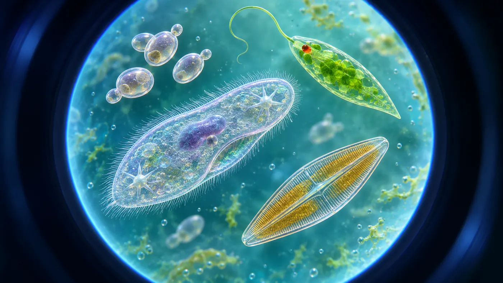
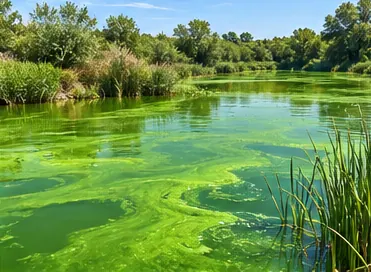
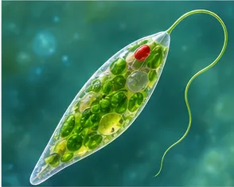
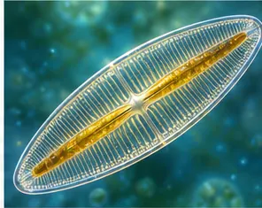
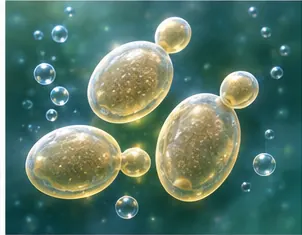
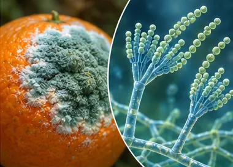

<!DOCTYPE html>
<html lang="es">
<head>
<meta charset="utf-8">
<meta name="viewport" content="width=device-width, initial-scale=1, viewport-fit=cover">
<title>Misión 1 · Los invisibles</title>
<link rel="icon" href="data:image/svg+xml,%3Csvg xmlns=%22http://www.w3.org/2000/svg%22 viewBox=%220 0 100 100%22%3E%3Ctext y=%22.9em%22 font-size=%2290%22%3E%F0%9F%94%AC%3C/text%3E%3C/svg%3E">
<meta name="description" content="Biología 1.º Bachillerato · Tema 4 · Microorganismos: app de estudio complementaria.">
<link rel="preconnect" href="https://fonts.googleapis.com"><link rel="preconnect" href="https://fonts.gstatic.com" crossorigin>
<link href="https://fonts.googleapis.com/css2?family=Outfit:wght@400;600;700;800&display=swap" rel="stylesheet">
<style>
:root{
  --bg:#0B1E2D; --bg2:#123A52; --panel:#16344A; --panel2:#1C4560;
  --ink:#EAF4F6; --muted:#A9C3CC; --paper:#F4F8F7; --paperInk:#14232C;
  --tq:#2EC4B6; --green:#8BC34A; --gold:#F2B134; --silver:#B8C4CC;
  --red:#D64550; --wine:#8E1B2C; --ok:#3DDC97; --bad:#FF6B6B;
  --r:18px; --sh:0 10px 30px rgba(0,0,0,.35);
}
*{box-sizing:border-box;-webkit-tap-highlight-color:transparent}
html{background:#0B1E2D}
html,body{margin:0;min-height:100%}
body{font-family:'Outfit',system-ui,-apple-system,Segoe UI,Roboto,sans-serif;font-size:18px;line-height:1.5;color:var(--ink);
  background:radial-gradient(1200px 800px at 70% -10%,#1d5a78 0%,transparent 60%),linear-gradient(180deg,var(--bg2),var(--bg));background-attachment:fixed;min-height:100%}
i{font-style:italic}
button{font:inherit;color:inherit;cursor:pointer;border:0;background:none}
.btn{min-height:48px;min-width:48px;padding:10px 18px;border-radius:14px;background:var(--panel2);color:var(--ink);font-weight:600;font-size:17px;
  border:2px solid rgba(255,255,255,.12);display:inline-flex;align-items:center;justify-content:center;gap:8px;transition:transform .15s,background .2s}
.btn:active{transform:scale(.97)}
.btn.primary{background:var(--tq);color:#06232A;border-color:transparent}
.btn.gold{background:var(--gold);color:#2A1C00;border-color:transparent}
.btn.ghost{background:transparent}
.btn.small{min-height:44px;padding:6px 14px;font-size:16px}
.btn:disabled{opacity:.45;cursor:not-allowed}
.btn:focus-visible,.tile:focus-visible,.chip:focus-visible{outline:3px solid var(--gold);outline-offset:3px}

/* Barra superior */
#top{position:sticky;top:0;z-index:20;display:flex;align-items:center;gap:12px;padding:10px 16px;background:rgba(11,30,45,.92);backdrop-filter:blur(8px);border-bottom:1px solid rgba(255,255,255,.08)}
#top .home{font-size:22px}
#top .ttl{font-weight:700;font-size:17px;flex:1;min-width:0;white-space:nowrap;overflow:hidden;text-overflow:ellipsis}
.xpbox{display:flex;align-items:center;gap:8px;font-weight:700;font-size:16px}
.xpbar{width:110px;height:12px;border-radius:8px;background:#0a1621;overflow:hidden;border:1px solid rgba(255,255,255,.15)}
.xpbar>span{display:block;height:100%;background:linear-gradient(90deg,var(--tq),var(--green));transition:width .5s}
#main{max-width:1100px;margin:0 auto;padding:16px 16px 120px}
h1{font-size:30px;line-height:1.15;margin:8px 0 6px}
h2{font-size:24px;margin:18px 0 8px}
h3{font-size:20px;margin:12px 0 6px}
.sub{color:var(--muted)}
.ref{font-size:14px;color:var(--muted);opacity:.9}
.paper .ref{color:#4d6470}
.panel{background:rgba(22,52,74,.85);border:1px solid rgba(255,255,255,.1);border-radius:var(--r);padding:18px;box-shadow:var(--sh)}
.paper{background:var(--paper);color:var(--paperInk);border-radius:var(--r);padding:18px;box-shadow:var(--sh)}
.row{display:flex;gap:12px;flex-wrap:wrap;align-items:center}
.grid{display:grid;gap:14px}
.mt{margin-top:14px}
.center{text-align:center}
.hide{display:none!important}

/* Portada */
.hero{position:relative;border-radius:24px;overflow:hidden;min-height:260px;box-shadow:var(--sh)}
.hero img{width:100%;height:100%;object-fit:cover;position:absolute;inset:0}
.hero .shade{position:absolute;inset:0;background:linear-gradient(90deg,rgba(6,18,28,.92) 0%,rgba(6,18,28,.55) 55%,rgba(6,18,28,.1) 100%)}
.hero .in{position:relative;padding:28px;max-width:560px}
.kicker{font-size:14px;letter-spacing:.12em;text-transform:uppercase;color:var(--tq);font-weight:700}
.map{position:relative;margin-top:18px;border-radius:24px;overflow:hidden;padding:18px;background:#0e2a3b}
.map .bgimg{position:absolute;inset:0;width:100%;height:100%;object-fit:cover;opacity:.55}
.map .nodes{position:relative;display:grid;grid-template-columns:repeat(auto-fill,minmax(220px,1fr));gap:14px}
.tile{position:relative;text-align:left;padding:16px;border-radius:18px;background:rgba(11,30,45,.82);border:2px solid rgba(255,255,255,.12);min-height:110px;display:flex;flex-direction:column;gap:4px}
.tile .ic{font-size:30px}
.tile .nm{font-weight:700;font-size:19px}
.tile .ds{font-size:15px;color:var(--muted)}
.tile.done{border-color:var(--ok)}
.tile.done::after{content:'✓ Completado';position:absolute;top:10px;right:12px;font-size:13px;font-weight:700;color:var(--ok)}
.tile.locked{opacity:.55}
.tile.locked::after{content:'🔒 Bloqueado';position:absolute;top:10px;right:12px;font-size:13px;color:var(--muted)}
.badges{display:grid;grid-template-columns:repeat(auto-fill,minmax(150px,1fr));gap:10px}
.badge{padding:12px;border-radius:14px;background:rgba(255,255,255,.05);border:1px dashed rgba(255,255,255,.2);text-align:center;font-size:15px}
.badge .bi{font-size:30px;filter:grayscale(1);opacity:.4}
.badge.on{border:2px solid var(--gold);background:rgba(242,177,52,.12)}
.badge.on .bi{filter:none;opacity:1}

/* Audio y subtítulos */
.listen{background:#0a1621;border:2px solid var(--tq);color:var(--tq)}
.listen.on{background:var(--tq);color:#06232A}
#subs{position:fixed;left:50%;bottom:16px;transform:translateX(-50%);max-width:min(900px,92vw);background:rgba(0,0,0,.88);color:#fff;padding:12px 18px;border-radius:14px;font-size:19px;z-index:50;border:2px solid var(--tq)}

/* Cápsula */
.stage{position:relative;border-radius:20px;overflow:hidden;background:#06131c;aspect-ratio:16/9;width:min(100%, calc(62vh * 16 / 9));margin:0 auto}
.stage>img,.stage>svg{position:absolute;inset:0;width:100%;height:100%;object-fit:cover}
.stage .cap{position:absolute;left:0;right:0;bottom:0;padding:14px 18px;background:linear-gradient(0deg,rgba(0,0,0,.85),rgba(0,0,0,0));font-size:19px}
.dots{display:flex;gap:6px;justify-content:center;margin:10px 0}
.dots span{width:12px;height:12px;border-radius:50%;background:#33505f}
.dots span.on{background:var(--tq)}
.stop{border-left:6px solid var(--gold)}
.opt{display:block;width:100%;text-align:left;min-height:52px;padding:12px 16px;margin:8px 0;border-radius:14px;background:var(--panel2);border:2px solid rgba(255,255,255,.14);font-size:17px}
.paper .opt{background:#fff;border-color:#c9d6dc;color:var(--paperInk)}
.opt.good{border-color:var(--ok);background:rgba(61,220,151,.18)}
.opt.badx{border-color:var(--bad);background:rgba(255,107,107,.16)}
.opt .why{display:block;font-size:15px;margin-top:4px;opacity:.95}
.mark{font-weight:800;margin-right:6px}

/* Cartas */
.deck{display:grid;grid-template-columns:repeat(auto-fill,minmax(210px,1fr));gap:16px}
.card{perspective:1200px;height:330px;cursor:pointer}
.card .in{position:relative;width:100%;height:100%;transition:transform .6s;transform-style:preserve-3d}
.card.flip .in{transform:rotateY(180deg)}
.face{position:absolute;inset:0;border-radius:18px;backface-visibility:hidden;-webkit-backface-visibility:hidden;overflow:hidden;display:flex;flex-direction:column}
.front{background:linear-gradient(160deg,#173f57,#0c2433);border:4px solid var(--silver)}
.card.r-r .front{border-color:var(--tq)}
.card.r-e .front{border-color:var(--gold);box-shadow:0 0 0 2px rgba(242,177,52,.35),0 0 24px rgba(242,177,52,.35)}
.front .art{flex:1;min-height:0;background:#0a1b26;display:flex;align-items:center;justify-content:center;overflow:hidden}
.front .art img{width:100%;height:100%;object-fit:cover}
.front .art svg{width:80%;height:80%}
.front .meta{padding:10px 12px;background:rgba(0,0,0,.35)}
.front .nm{font-weight:700;font-size:18px;line-height:1.2}
.front .tp{display:flex;justify-content:space-between;font-size:14px;color:var(--muted);margin-top:4px}
.back{transform:rotateY(180deg);background:var(--paper);color:var(--paperInk);padding:12px 14px;font-size:15.5px;overflow:auto;border:4px solid var(--silver)}
.card.r-r .back{border-color:var(--tq)}.card.r-e .back{border-color:var(--gold)}
.back h4{margin:0 0 6px;font-size:17px}
.back p{margin:4px 0}
.nc{background:#ffe9e9;border-left:5px solid var(--red);padding:6px 8px;border-radius:8px;margin:6px 0}
.rar{font-weight:700}
.failtag{position:absolute;top:8px;left:8px;background:var(--red);color:#fff;font-size:13px;padding:2px 8px;border-radius:10px;z-index:2}
.tabs{display:flex;gap:8px;flex-wrap:wrap;margin:8px 0 14px}
.tabs .btn[aria-pressed=true]{background:var(--tq);color:#06232A}
.mem{display:grid;grid-template-columns:repeat(auto-fill,minmax(160px,1fr));gap:10px}
.mtile{min-height:120px;border-radius:14px;padding:10px;background:var(--panel2);border:2px solid rgba(255,255,255,.15);font-size:15px;text-align:left}
.mtile.hidden{background:repeating-linear-gradient(45deg,#163a50,#163a50 10px,#1a4560 10px,#1a4560 20px);color:transparent}
.mtile.hidden *{visibility:hidden}
.mtile.sel{border-color:var(--gold)}
.mtile.ok{border-color:var(--ok);background:rgba(61,220,151,.14)}

/* Arrastre */
.chips{display:flex;flex-wrap:wrap;gap:10px;min-height:56px}
.chip{touch-action:none;user-select:none;-webkit-user-select:none;min-height:48px;padding:10px 14px;border-radius:12px;background:#fff;color:var(--paperInk);font-weight:600;font-size:16px;border:2px solid #9fb4bf;box-shadow:0 3px 0 rgba(0,0,0,.25);cursor:grab;display:inline-flex;align-items:center;gap:8px;max-width:100%}
.chip img{width:56px;height:56px;object-fit:cover;border-radius:8px}
.chip.sel{outline:3px solid var(--gold)}
.chip.ok{border-color:var(--ok);background:#e4fbef}
.chip.no{border-color:var(--bad);background:#ffe6e6}
.chip.dragging{opacity:.9;box-shadow:0 12px 24px rgba(0,0,0,.4);z-index:100;position:fixed;pointer-events:none}
.zones{display:grid;grid-template-columns:repeat(auto-fit,minmax(180px,1fr));gap:12px}
.zone{min-height:120px;border-radius:16px;border:3px dashed rgba(255,255,255,.3);padding:10px;background:rgba(255,255,255,.04)}
.zone.over{border-color:var(--gold);background:rgba(242,177,52,.12)}
.zone h4{margin:0 0 8px;font-size:17px}
.slot{min-height:52px;border-radius:12px;border:2px dashed rgba(255,255,255,.35);display:flex;align-items:center;gap:8px;padding:4px 8px;margin:6px 0;background:rgba(255,255,255,.04)}
.slot .num{font-weight:800;color:var(--gold);min-width:26px}
.slot.over{border-color:var(--gold)}
.feedback{margin-top:12px;padding:12px 14px;border-radius:12px;font-size:17px}
.feedback.good{background:rgba(61,220,151,.15);border:2px solid var(--ok)}
.feedback.bad{background:rgba(255,107,107,.14);border:2px solid var(--bad)}

/* Mito o ciencia */
.swipewrap{position:relative;height:300px;max-width:520px;margin:0 auto}
.swcard{position:absolute;inset:0;border-radius:22px;background:var(--paper);color:var(--paperInk);padding:26px;font-size:22px;font-weight:600;display:flex;align-items:center;justify-content:center;text-align:center;touch-action:none;box-shadow:var(--sh);user-select:none;-webkit-user-select:none}
.swcard .lab{position:absolute;top:16px;font-size:18px;font-weight:800;padding:4px 12px;border-radius:10px;opacity:0}
.swcard .lab.l{left:16px;border:3px solid var(--red);color:var(--red)}
.swcard .lab.r{right:16px;border:3px solid #1d8f5e;color:#1d8f5e}

/* Textos largos */
textarea{width:100%;min-height:120px;font:inherit;font-size:17px;padding:12px;border-radius:12px;border:2px solid #9fb4bf;color:var(--paperInk);background:#fff}
.check{display:flex;gap:10px;align-items:flex-start;padding:10px;border-radius:12px;min-height:48px}
.check input{width:28px;height:28px;flex:none;margin-top:2px}
.toast{position:fixed;top:72px;left:50%;transform:translateX(-50%);background:var(--gold);color:#2A1C00;font-weight:800;padding:12px 20px;border-radius:14px;z-index:60;box-shadow:var(--sh)}
.pill{display:inline-block;padding:3px 10px;border-radius:999px;background:rgba(255,255,255,.1);font-size:14px}
input[type=range]{width:100%;height:44px;accent-color:var(--tq)}
.svgbox svg{width:100%;height:auto;display:block}
.timeline{position:relative}

@keyframes pop{0%{transform:scale(.6);opacity:0}100%{transform:scale(1);opacity:1}}
@keyframes floaty{0%,100%{transform:translateY(0)}50%{transform:translateY(-6px)}}
@keyframes beat{0%,100%{transform:rotate(-8deg)}50%{transform:rotate(8deg)}}
@keyframes fadein{from{opacity:0;transform:translateY(8px)}to{opacity:1;transform:none}}
.anim .fx-pop{animation:pop .4s ease-out}
.anim .fx-float{animation:floaty 4s ease-in-out infinite}
.anim .fx-in{animation:fadein .45s ease-out}
.anim .cilia{transform-box:fill-box;transform-origin:center;animation:cil 1.2s ease-in-out infinite}
@keyframes cil{0%,100%{transform:scale(1)}50%{transform:scale(1.03)}}
body:not(.anim) *{animation:none!important;transition:none!important}
@media (prefers-reduced-motion:reduce){*{animation:none!important;transition:none!important}}
@media (max-width:700px){h1{font-size:25px}.xpbar{width:70px}.card{height:310px}#top .ttl{font-size:15px}}

</style>
</head>
<body class="anim">
<header id="top"></header>
<main id="main" tabindex="-1"></main>
<script>
/* ===== DATOS DE LA MISIÓN 1 · LOS INVISIBLES ===== */
/* Fuente única: apuntes y presentación de la profesora (Tema 4). */

const MISSION = {
  id: 'bio-t4-m1',
  title: 'Misión 1 · Los invisibles',
  subtitle: 'Tema 4 · Microorganismos y formas acelulares — El mundo microbiano y los microorganismos eucariotas'
};

const BADGES = [
  { id: 'zoom', icon: '🔬', name: 'Primer zoom', desc: 'Has visto la cápsula completa.' },
  { id: 'coleccion', icon: '🃏', name: 'Coleccionista', desc: 'Has girado todas las cartas del mazo.' },
  { id: 'memory', icon: '🧩', name: 'Memoria celular', desc: 'Has completado una partida de Memory.' },
  { id: 'duelo', icon: '⚔️', name: 'Duelista', desc: 'Has ganado un duelo con 6 aciertos o más de 8.' },
  { id: 'nivel3', icon: '🧠', name: 'Aplicadora', desc: 'Has superado el nivel 3 del quiz.' },
  { id: 'clasif', icon: '🧫', name: 'Ojo de microscopio', desc: 'Clasificador sin fallos.' },
  { id: 'plasmo', icon: '🦟', name: 'Cazadora de vectores', desc: 'Has completado el ciclo de <i>Plasmodium</i>.' },
  { id: 'nucleos', icon: '🔀', name: 'Dos núcleos', desc: 'Has completado la conjugación de <i>Paramecium</i>.' },
  { id: 'laguna', icon: '🌿', name: 'Guardiana de la laguna', desc: 'Has completado «Laguna verde».' },
  { id: 'hongos', icon: '🍞', name: 'Micóloga', desc: 'Has completado «Levadura o moho».' },
  { id: 'mitos', icon: '🧪', name: 'Rompemitos', desc: '12 aciertos o más en «¿Mito o ciencia?».' },
  { id: 'jefe', icon: '👑', name: 'Jefe derrotado', desc: 'Has completado el jefe final.' }
];

/* Niveles del mapa (orden fijo del prompt) */
const LEVELS = [
  { id: 'capsula', icon: '🎬', name: 'Cápsula', desc: 'La historia del mundo invisible (≈4 min)' },
  { id: 'cartas', icon: '🃏', name: 'Cartas', desc: 'Estudiar · Memory · Duelo' },
  { id: 'quiz', icon: '❓', name: 'Quiz', desc: 'Recordar · Comprender · Aplicar' },
  { id: 'juegos', icon: '🎮', name: 'Juegos', desc: 'Cinco retos del bloque' },
  { id: 'mito', icon: '↔️', name: '¿Mito o ciencia?', desc: 'Desliza y razona' },
  { id: 'jefe', icon: '👑', name: 'Jefe final', desc: 'Una situación nueva, formato PAU' },
  { id: 'actividades', icon: '📝', name: 'Actividades de clase', desc: 'Pistas para las preguntas 1–5 y 30' },
  { id: 'cierre', icon: '🏁', name: 'Cierre', desc: 'Resumen, «Ya sé…» y repaso' }
];

/* ===== CARTAS ===== */
/* type: concepto | organismo | estructura | proceso | hito | error */
/* rar: c (común) | r (rara) | e (épica) */
const CARDS = [
  // Conceptos
  { id:'microorganismo', name:'Microorganismo', type:'concepto', rar:'e', art:'micro',
    def:'Ser vivo tan pequeño que normalmente no puede observarse a simple vista y requiere instrumentos de aumento para su estudio. Describe un tamaño y un modo de estudio, no un único grupo evolutivo.',
    ex:'Bacterias, protozoos, algas microscópicas y levaduras.',
    nc:'Bacteria: las bacterias son solo un tipo de microorganismo; también hay microorganismos eucariotas.',
    ref:'Apuntes p. 1 · Diap. 4' },
  { id:'acelulares', name:'Formas acelulares', type:'concepto', rar:'r', art:'virus',
    def:'Virus, viroides y priones. No forman células; dependen de células o proteínas del hospedador para propagarse.',
    ex:'Los virus se estudian en microbiología, aunque no son células.',
    nc:'Microorganismos celulares (bacterias, protozoos, algas, hongos).',
    ref:'Apuntes p. 2 · Diap. 5' },
  { id:'protozoo', name:'Protozoo', type:'concepto', rar:'e', art:'protozoo',
    def:'Organismo eucariota, generalmente unicelular y heterótrofo. La mayoría carece de pared celular. Es una agrupación didáctica de distintos protistas: no todos pertenecen al mismo grupo evolutivo.',
    ex:'<i>Paramecium</i>, amebas, <i>Trypanosoma</i>, <i>Plasmodium</i>.',
    nc:'Alga microscópica: las algas son fotosintéticas.',
    ref:'Apuntes p. 2 · Diap. 9' },
  { id:'formasvida', name:'Vida libre, simbionte, parásito', type:'concepto', rar:'c', art:'tres',
    def:'Tres formas de vida de los protozoos: viven libremente en el agua o en ambientes húmedos, establecen asociaciones estrechas con otros organismos o viven a expensas de un hospedador.',
    ex:'Ameba (vida libre) · protozoos del intestino de las termitas (simbiontes) · <i>Plasmodium</i> (parásito).',
    nc:'Simbionte no significa parásito.',
    ref:'Apuntes p. 2 · Diap. 9' },
  { id:'mutualismo', name:'Mutualismo', type:'concepto', rar:'c', art:'mutual',
    def:'Relación en la que ambas especies se benefician.',
    ex:'Termitas y protozoos flagelados de su intestino: los protozoos digieren la celulosa y la termita les ofrece refugio sin oxígeno y alimento.',
    nc:'Parasitismo: uno se beneficia a costa del otro.',
    ref:'Apuntes p. 15 · Diap. 10' },
  { id:'vector', name:'Vector biológico', type:'concepto', rar:'e', art:'vector',
    def:'Organismo que transmite el agente causal entre hospedadores. No «produce» la enfermedad por sí mismo.',
    ex:'La hembra de <i>Anopheles</i> transmite <i>Plasmodium</i>; la mosca tse-tsé transmite <i>Trypanosoma brucei</i>.',
    nc:'Agente causal: el que causa la enfermedad es el protozoo.',
    ref:'Apuntes p. 4–5 · Diap. 16' },
  { id:'hospedador', name:'Hospedador', type:'concepto', rar:'c', art:'host',
    def:'Organismo en el que vive un parásito y del que obtiene nutrientes.',
    ex:'<i>Plasmodium</i> necesita dos hospedadores: el ser humano y la hembra del mosquito <i>Anopheles</i>.',
    nc:'Vector: el mosquito es a la vez hospedador y vector.',
    ref:'Apuntes p. 3–4' },
  { id:'fitoplancton', name:'Fitoplancton', type:'concepto', rar:'r', art:'plancton',
    def:'Conjunto de algas microscópicas, muchas unicelulares, que actúan como productores primarios y contribuyen a la producción de oxígeno.',
    ex:'Diatomeas y dinoflagelados.',
    nc:'Algas pluricelulares (como la mayoría de las rodofitas).',
    ref:'Apuntes p. 6 · Diap. 20' },
  { id:'productor', name:'Productor primario', type:'concepto', rar:'c', art:'sol',
    def:'Organismo que fabrica materia orgánica mediante fotosíntesis. Las algas del fitoplancton actúan como productores primarios.',
    ex:'Las diatomeas, importantes productores primarios del plancton.',
    nc:'Descomponedor: transforma materia orgánica muerta.',
    ref:'Apuntes p. 6' },
  { id:'mixotrofo', name:'Mixótrofo', type:'concepto', rar:'r', art:'mixo',
    def:'Organismo que puede combinar fotosíntesis y nutrición heterótrofa.',
    ex:'<i>Euglena</i> (euglenofitas).',
    nc:'Protozoo: los protozoos son heterótrofos.',
    ref:'Apuntes p. 6 · Diap. 21' },
  { id:'absorcion', name:'Heterótrofo por absorción', type:'concepto', rar:'c', art:'absor',
    def:'Obtiene la materia orgánica ya elaborada absorbiéndola del medio. Es el tipo de nutrición de los hongos.',
    ex:'Levaduras en medios ricos en azúcares; mohos sobre alimentos.',
    nc:'Fagocitosis: englobar partículas con pseudópodos.',
    ref:'Apuntes p. 7 · Diap. 23' },

  // Organismos
  { id:'paramecium', name:'<i>Paramecium</i>', type:'organismo', rar:'e', img:'04-paramecium.webp',
    def:'Protozoo ciliado: se desplaza mediante numerosos cilios que baten de forma coordinada. Tiene dos tipos de núcleos (macronúcleo y micronúcleo). Se reproduce por bipartición y presenta conjugación.',
    ex:'Ejemplo clásico de ciliado.',
    nc:'Ameba: se desplaza con pseudópodos.',
    ref:'Apuntes p. 3 · Diap. 11, 13' },
  { id:'ameba', name:'Ameba', type:'organismo', rar:'r', img:'05-ameba.webp',
    def:'Protozoo ameboide: se desplaza y captura alimento mediante pseudópodos, prolongaciones temporales del citoplasma. Engloba alimento por fagocitosis.',
    ex:'Muchas amebas viven libres en agua o ambientes húmedos.',
    nc:'Hongo: los hongos se nutren por absorción y tienen pared de quitina.',
    ref:'Apuntes p. 3 · Diap. 11–12' },
  { id:'trypanosoma', name:'<i>Trypanosoma brucei</i>', type:'organismo', rar:'r', img:'06-trypanosoma.webp',
    def:'Protozoo flagelado. Causa la tripanosomiasis africana o enfermedad del sueño, transmitida por la mosca tse-tsé.',
    ex:'Se transmite mediante un insecto vector.',
    nc:'<i>Plasmodium</i>: apicomplejo que causa la malaria.',
    ref:'Apuntes p. 4 · Diap. 16' },
  { id:'plasmodium', name:'<i>Plasmodium</i>', type:'organismo', rar:'e', img:'07-plasmodium.webp',
    def:'Protozoo apicomplejo que causa la malaria o paludismo. Necesita dos hospedadores: el ser humano y la hembra del mosquito <i>Anopheles</i>. En el ser humano se multiplica primero en el hígado y después en los glóbulos rojos; la fase sexual ocurre en el mosquito.',
    ex:'La rotura periódica de los glóbulos rojos se relaciona con los episodios de fiebre.',
    nc:'<i>Anopheles</i>: es el vector, no el agente causal.',
    ref:'Apuntes p. 4–5 · Diap. 16–19' },
  { id:'anopheles', name:'<i>Anopheles</i> (hembra)', type:'organismo', rar:'r', img:'08-anopheles.webp',
    def:'Mosquito cuya hembra actúa como vector biológico de la malaria: al picar inocula esporozoitos y al picar a una persona infectada ingiere gametocitos. En su interior ocurre la reproducción sexual de <i>Plasmodium</i>.',
    ex:'Si se elimina el mosquito, se interrumpe la transmisión a nuevas personas.',
    nc:'Agente causal de la malaria (es <i>Plasmodium</i>).',
    ref:'Apuntes p. 5 · Diap. 17–18' },
  { id:'trichonympha', name:'Protozoos de la termita', type:'organismo', rar:'c', img:'09-termita.webp',
    def:'Protozoos flagelados que viven en el intestino de las termitas (por ejemplo, <i>Trichonympha</i>). Las termitas comen madera pero no pueden digerir la celulosa por sí mismas; los protozoos producen las enzimas que la descomponen.',
    ex:'Ejemplo clásico de protozoo simbionte (mutualismo).',
    nc:'Parásito.',
    ref:'Diap. 10' },
  { id:'diatomea', name:'Diatomea', type:'organismo', rar:'r', img:'10-diatomea.webp',
    def:'Alga unicelular con una pared celular de sílice formada por dos valvas. Muy abundantes en el plancton marino y de agua dulce; importantes productores primarios.',
    ex:'Forman parte del fitoplancton.',
    nc:'Dinoflagelado: dos flagelos, mareas rojas.',
    ref:'Apuntes p. 6 · Diap. 21' },
  { id:'dinoflagelado', name:'Dinoflagelado', type:'organismo', rar:'r', img:'11-dinoflagelado.webp',
    def:'Alga microscópica; muchas especies poseen dos flagelos y forman parte del fitoplancton. Algunas proliferaciones originan mareas rojas y determinadas especies producen toxinas.',
    ex:'Mareas rojas.',
    nc:'Diatomea: pared de sílice con dos valvas.',
    ref:'Apuntes p. 6 · Diap. 21–22' },
  { id:'euglena', name:'<i>Euglena</i>', type:'organismo', rar:'r', img:'12-euglena.webp',
    def:'Euglenofita: alga unicelular flagelada que puede combinar fotosíntesis y nutrición heterótrofa (mixótrofa).',
    ex:'Ejemplo de euglenofita.',
    nc:'Protozoo flagelado heterótrofo, como <i>Trypanosoma</i>.',
    ref:'Apuntes p. 6 · Diap. 21' },
  { id:'clorofitas', name:'Clorofitas (algas verdes)', type:'organismo', rar:'c', art:'verde',
    def:'Poseen clorofilas y muchas especies son de agua dulce. Algunas formas son coloniales o filamentosas.',
    ex:'<i>Chlamydomonas</i>, <i>Volvox</i>, <i>Spirogyra</i>.',
    nc:'Rodofitas: algas rojas con ficoeritrina.',
    ref:'Apuntes p. 6 · Diap. 20–21' },
  { id:'rodofitas', name:'Rodofitas (algas rojas)', type:'organismo', rar:'c', art:'rojo',
    def:'Poseen pigmentos como la ficoeritrina además de clorofila. La mayoría son pluricelulares, aunque existen especies microscópicas o unicelulares.',
    ex:'La ficoeritrina les da su color rojo o rojo-rosado.',
    nc:'Marea roja: la producen dinoflagelados, no rodofitas.',
    ref:'Apuntes p. 6 · Diap. 20–21' },
  { id:'levadura', name:'Levadura', type:'organismo', rar:'r', img:'13-levaduras.webp',
    def:'Hongo unicelular. Suele vivir en medios ricos en azúcares; algunas realizan fermentaciones utilizadas en la elaboración de pan y bebidas fermentadas. Se reproduce frecuentemente por gemación.',
    ex:'Pan y bebidas fermentadas.',
    nc:'Bacteria: la levadura es eucariota.',
    ref:'Apuntes p. 7 · Diap. 23' },
  { id:'penicillium', name:'<i>Penicillium</i>', type:'organismo', rar:'e', img:'14-penicillium.webp',
    def:'Moho (hongo filamentoso formado por hifas). Ilustra tanto aplicaciones beneficiosas, como la producción de antibióticos, como el deterioro de alimentos.',
    ex:'Fleming observó en 1928 la actividad antibacteriana de un moho de este género.',
    nc:'Levadura: hongo unicelular.',
    ref:'Apuntes p. 7, 14 · Diap. 23' },

  // Estructuras
  { id:'pseudopodo', name:'Pseudópodo', type:'estructura', rar:'r', art:'pseudo',
    def:'Prolongación temporal del citoplasma que permite desplazarse y capturar alimento.',
    ex:'Amebas.',
    nc:'Cilio y flagelo: estructuras permanentes que baten.',
    ref:'Apuntes p. 3 · Diap. 11' },
  { id:'cilio', name:'Cilio', type:'estructura', rar:'c', art:'cilio',
    def:'Prolongación corta; los ciliados presentan numerosos cilios que baten de forma coordinada.',
    ex:'<i>Paramecium</i>.',
    nc:'Flagelo: prolongación larga; uno o pocos.',
    ref:'Apuntes p. 3 · Diap. 11' },
  { id:'flagelo', name:'Flagelo', type:'estructura', rar:'c', art:'flagelo',
    def:'Prolongación larga que permite el movimiento. Los flagelados presentan uno o varios.',
    ex:'<i>Trypanosoma</i>, <i>Euglena</i>, dinoflagelados.',
    nc:'Cilio: prolongación corta y numerosa.',
    ref:'Apuntes p. 3 · Diap. 11' },
  { id:'complejoapical', name:'Complejo apical', type:'estructura', rar:'r', art:'apical',
    def:'Conjunto de estructuras situado en uno de los extremos de los apicomplejos que facilita la entrada en las células que parasitan.',
    ex:'<i>Plasmodium</i>.',
    nc:'Estructura de locomoción: los apicomplejos generalmente no presentan cilios, flagelos ni pseudópodos locomotores.',
    ref:'Apuntes p. 3 · Diap. 11' },
  { id:'macronucleo', name:'Macronúcleo', type:'estructura', rar:'e', art:'macro',
    def:'Núcleo de <i>Paramecium</i> que controla la actividad habitual de la célula, como el metabolismo y el funcionamiento general.',
    ex:'En la conjugación, el macronúcleo antiguo se desorganiza y desaparece.',
    nc:'Micronúcleo: participa en los procesos sexuales.',
    ref:'Apuntes p. 3 · Diap. 13' },
  { id:'micronucleo', name:'Micronúcleo', type:'estructura', rar:'e', art:'micronuc',
    def:'Núcleo de <i>Paramecium</i> que contiene la información genética que participa principalmente en los procesos sexuales.',
    ex:'En la conjugación, los micronúcleos se dividen y se intercambia material genético.',
    nc:'Macronúcleo: controla el metabolismo habitual.',
    ref:'Apuntes p. 3 · Diap. 13' },
  { id:'valva', name:'Valvas de sílice', type:'estructura', rar:'c', art:'valva',
    def:'Las dos piezas que forman la pared celular de sílice de las diatomeas.',
    ex:'Diatomeas.',
    nc:'Pared de quitina (hongos).',
    ref:'Apuntes p. 6 · Diap. 21' },
  { id:'quitina', name:'Pared de quitina', type:'estructura', rar:'c', art:'quitina',
    def:'Pared celular característica de los hongos.',
    ex:'Levaduras y mohos.',
    nc:'Pared de sílice (diatomeas); la mayoría de protozoos carece de pared.',
    ref:'Apuntes p. 7 · Diap. 23' },
  { id:'hifa', name:'Hifa', type:'estructura', rar:'r', art:'hifa',
    def:'Filamento que forma el cuerpo de los mohos u hongos filamentosos.',
    ex:'<i>Penicillium</i>.',
    nc:'Micelio: el conjunto de hifas.',
    ref:'Apuntes p. 7 · Diap. 23' },
  { id:'micelio', name:'Micelio', type:'estructura', rar:'r', art:'micelio',
    def:'Conjunto de hifas de un hongo filamentoso.',
    ex:'La mancha de moho sobre un alimento.',
    nc:'Hifa: cada filamento por separado.',
    ref:'Apuntes p. 7 · Diap. 23' },

  // Procesos
  { id:'fagocitosis', name:'Fagocitosis', type:'proceso', rar:'r', art:'fago',
    def:'Algunos protozoos, como muchas amebas, rodean partículas de alimento mediante pseudópodos y las introducen en la célula.',
    ex:'Amebas.',
    nc:'Absorción de sustancias disueltas del medio.',
    ref:'Apuntes p. 3 · Diap. 12' },
  { id:'biparticion', name:'Bipartición', type:'proceso', rar:'r', art:'bipart',
    def:'Una célula se divide y origina dos células hijas. Ocurre habitualmente en <i>Paramecium</i>.',
    ex:'<i>Paramecium</i> tras la conjugación sigue reproduciéndose por división binaria.',
    nc:'Conjugación: intercambio genético, no reproducción.',
    ref:'Apuntes p. 3 · Diap. 12' },
  { id:'divmultiple', name:'División múltiple', type:'proceso', rar:'r', art:'multi',
    def:'Una célula origina numerosas células hijas en un mismo proceso. Ocurre en algunas fases de <i>Plasmodium</i>.',
    ex:'Multiplicación de <i>Plasmodium</i> en hígado y glóbulos rojos.',
    nc:'Bipartición: origina solo dos células.',
    ref:'Apuntes p. 3 · Diap. 12' },
  { id:'conjugacion', name:'Conjugación de <i>Paramecium</i>', type:'proceso', rar:'e', art:'conjug',
    def:'Dos paramecios compatibles se unen temporalmente, sus micronúcleos se dividen e intercambian material genético; se forma un nuevo núcleo diploide y el macronúcleo antiguo desaparece. No produce inmediatamente nuevos individuos: genera nuevas combinaciones genéticas.',
    ex:'Después, cada paramecio puede seguir reproduciéndose por división binaria.',
    nc:'Reproducción (bipartición) y conjugación bacteriana (Bloque 2).',
    ref:'Apuntes p. 3 · Diap. 13–15' },
  { id:'gemacion', name:'Gemación', type:'proceso', rar:'r', art:'gema',
    def:'Forma frecuente de reproducción de las levaduras.',
    ex:'Levaduras.',
    nc:'Bipartición.',
    ref:'Apuntes p. 7 · Diap. 23' },
  { id:'fermentacion', name:'Fermentación (levaduras)', type:'proceso', rar:'c', art:'ferm',
    def:'Algunas levaduras realizan fermentaciones que se utilizan en la elaboración de pan y bebidas fermentadas.',
    ex:'Pan, bebidas alcohólicas.',
    nc:'Respiración (se estudia en el Bloque 2).',
    ref:'Apuntes p. 7 · Diap. 23' },
  { id:'mareaRoja', name:'Marea roja', type:'proceso', rar:'r', img:'15-marea-roja.webp',
    def:'Algunas proliferaciones de dinoflagelados pueden colorear el agua de rojo o marrón, y determinadas especies pueden liberar toxinas que afectan a la fauna marina y a las personas que consumen organismos contaminados.',
    ex:'Proliferaciones en la costa.',
    nc:'«Toda marea roja es tóxica»: no todas las algas son dañinas ni todo cambio de color es tóxico.',
    ref:'Apuntes p. 6 · Diap. 22' },

  // Formas de Plasmodium
  { id:'esporozoito', name:'Esporozoito', type:'concepto', rar:'r', art:'espo',
    def:'Forma del parásito que el mosquito inocula en la persona al picarla.',
    ex:'Viaja hasta el hígado e invade los hepatocitos.',
    nc:'Merozoito.',
    ref:'Apuntes p. 5 · Diap. 17' },
  { id:'merozoito', name:'Merozoito', type:'concepto', rar:'r', art:'mero',
    def:'Forma que se produce después de que el parásito se multiplique en el hígado y que después invade los glóbulos rojos.',
    ex:'Dentro de los glóbulos rojos se vuelven a multiplicar (paso 4 del ciclo).',
    nc:'Gametocito: forma sexual.',
    ref:'Apuntes p. 5 · Diap. 17' },
  { id:'gametocito', name:'Gametocito', type:'concepto', rar:'r', art:'gameto',
    def:'Forma sexual del parásito, masculina o femenina, que será ingerida por otro mosquito.',
    ex:'En el interior del mosquito se forman los gametos, que se fusionan y originan un cigoto.',
    nc:'Gameto: se forma en el mosquito a partir de los gametocitos.',
    ref:'Apuntes p. 5 · Diap. 17–18' },

  // Hitos
  { id:'tierra', name:'Formación de la Tierra', type:'hito', rar:'c', art:'tierra',
    def:'≈ 4 540 millones de años (Ma).',
    ex:'Punto de partida de la línea temporal.',
    nc:'Aparición de la vida (posterior).',
    ref:'Apuntes p. 2 · Diap. 6' },
  { id:'primerasvida', name:'Primeras evidencias de vida microbiana', type:'hito', rar:'r', art:'estroma',
    def:'Al menos ≈ 3 500 Ma, según evidencias ampliamente aceptadas del Arcaico. Existen indicios más antiguos (≈ 3 700 Ma), pero su interpretación es más discutida. No puede darse una fecha exacta.',
    ex:'≈ 3 500 Ma es la referencia segura de los apuntes.',
    nc:'Primeros eucariotas (≈ 1 800 Ma).',
    ref:'Apuntes p. 2 · Diap. 6' },
  { id:'granoxidacion', name:'Gran Oxidación', type:'hito', rar:'c', art:'o2',
    def:'≈ 2 400 Ma: aumento de O₂ atmosférico.',
    ex:'Los microorganismos han transformado profundamente la biosfera.',
    nc:'Primeros eucariotas.',
    ref:'Apuntes p. 2 · Diap. 6' },
  { id:'eucariotas', name:'Primeros eucariotas', type:'hito', rar:'r', art:'euc',
    def:'≈ 1 800 Ma.',
    ex:'Muy posteriores a las primeras evidencias de vida microbiana.',
    nc:'Primeros microorganismos (≈ 3 500 Ma).',
    ref:'Apuntes p. 2 · Diap. 6' },

  // Errores frecuentes
  { id:'err1', name:'«Todos los microorganismos son bacterias»', type:'error', rar:'e', art:'x',
    def:'Corrección: también existen microorganismos eucariotas; además, virus, viroides y priones son formas acelulares estudiadas en microbiología.',
    ex:'Protozoos, algas y hongos microscópicos son eucariotas.',
    nc:'Microorganismo ≠ bacteria.',
    ref:'Apuntes p. 2, 21 · Diap. 73' },
  { id:'err2', name:'«La conjugación de <i>Paramecium</i> es reproducción»', type:'error', rar:'e', art:'x',
    def:'Corrección: la conjugación no produce inmediatamente nuevos individuos; su consecuencia principal es generar nuevas combinaciones genéticas y aumentar la variabilidad.',
    ex:'Antes: 2 paramecios. Después: los mismos 2.',
    nc:'Bipartición.',
    ref:'Apuntes p. 3 · Diap. 13' },
  { id:'err3', name:'«El mosquito causa la malaria»', type:'error', rar:'e', art:'x',
    def:'Corrección: el mosquito no «produce» la enfermedad por sí mismo; actúa como vector biológico. El agente causal es el protozoo <i>Plasmodium</i>.',
    ex:'Lo mismo ocurre con la mosca tse-tsé y <i>Trypanosoma</i>.',
    nc:'Vector ≠ agente causal.',
    ref:'Apuntes p. 5' }
];

/* Situaciones para el Duelo: la carta que lo explica */
const DUELS = [
  { s:'Una célula avanza emitiendo prolongaciones temporales de su citoplasma y engloba una partícula de alimento.', a:'pseudopodo', o:['cilio','flagelo','complejoapical'] },
  { s:'Un compuesto bloquea el núcleo que controla el metabolismo habitual de un paramecio.', a:'macronucleo', o:['micronucleo','conjugacion','biparticion'] },
  { s:'Dos paramecios se separan tras intercambiar material genético. Siguen siendo dos.', a:'conjugacion', o:['biparticion','divmultiple','gemacion'] },
  { s:'Una sola célula del parásito origina numerosas células hijas en el interior de un hepatocito.', a:'divmultiple', o:['biparticion','gemacion','conjugacion'] },
  { s:'La forma del parásito que la hembra de mosquito introduce al picar.', a:'esporozoito', o:['merozoito','gametocito','plasmodium'] },
  { s:'El organismo que transporta el parásito de una persona a otra, pero no es la causa de la enfermedad.', a:'vector', o:['plasmodium','hospedador','trypanosoma'] },
  { s:'Un organismo unicelular, verde y con un flagelo, que puede combinar fotosíntesis y nutrición heterótrofa.', a:'euglena', o:['diatomea','paramecium','levadura'] },
  { s:'Una célula con una pared de vidrio formada por dos piezas que encajan como una caja y su tapa.', a:'diatomea', o:['dinoflagelado','euglena','rodofitas'] },
  { s:'El agua de la costa se colorea de rojo por la proliferación de algas con dos flagelos.', a:'mareaRoja', o:['rodofitas','fitoplancton','clorofitas'] },
  { s:'Una masa de filamentos verde-azulados crece sobre una naranja.', a:'micelio', o:['levadura','gemacion','fitoplancton'] },
  { s:'Una célula ovalada forma una pequeña yema que acaba separándose.', a:'gemacion', o:['biparticion','divmultiple','fagocitosis'] },
  { s:'Las termitas comen madera pero no digieren la celulosa; en su intestino viven flagelados que sí lo hacen. Ambos salen beneficiados.', a:'mutualismo', o:['vector','hospedador','absorcion'] },
  { s:'Un protozoo parásito sin cilios ni flagelos entra en las células gracias a estructuras situadas en un extremo.', a:'complejoapical', o:['pseudopodo','flagelo','cilio'] },
  { s:'La forma sexual del parásito que ingiere un mosquito al picar a una persona infectada.', a:'gametocito', o:['esporozoito','merozoito','divmultiple'] }
];

/* ===== QUIZ ===== */
/* o: [texto, ¿correcta?, explicación] */
const QUIZ = {
 1: [
  { q:'¿Qué describe el término «microorganismo»?', ref:'Apuntes p. 1', o:[
    ['Un tamaño y un modo de estudio', true, 'Correcto: los apuntes lo definen así; no es un grupo evolutivo.'],
    ['Un grupo evolutivo con un origen común', false, 'No: reúne organismos de grupos evolutivos muy distintos.'],
    ['Solo a las bacterias', false, 'Error frecuente: también hay microorganismos eucariotas.'],
    ['Seres sin organización celular', false, 'No: la mayoría son células; los acelulares son virus, viroides y priones.']]},
  { q:'¿Cuál de estos grupos es procariota?', ref:'Apuntes p. 2', o:[
    ['Arqueas', true, 'Correcto: bacterias y arqueas son procariotas.'],
    ['Protozoos', false, 'Son eucariotas.'],
    ['Algas microscópicas', false, 'Son eucariotas fotosintéticas.'],
    ['Levaduras', false, 'Son hongos, eucariotas.']]},
  { q:'¿Cómo se desplaza <i>Paramecium</i>?', ref:'Apuntes p. 3', o:[
    ['Mediante numerosos cilios que baten de forma coordinada', true, 'Correcto: es un ciliado.'],
    ['Mediante pseudópodos', false, 'Eso es propio de los ameboides.'],
    ['Mediante uno o varios flagelos largos', false, 'Eso es propio de los flagelados, como <i>Trypanosoma</i>.'],
    ['No se desplaza', false, 'Eso describe a los apicomplejos.']]},
  { q:'¿Qué rasgo caracteriza a los apicomplejos?', ref:'Apuntes p. 3', o:[
    ['Un complejo apical que facilita la entrada en las células que parasitan', true, 'Correcto.'],
    ['Numerosos cilios', false, 'Rasgo de los ciliados.'],
    ['Pared de sílice con dos valvas', false, 'Rasgo de las diatomeas.'],
    ['Fotosíntesis', false, 'Son parásitos heterótrofos.']]},
  { q:'¿Qué enfermedad causa <i>Trypanosoma brucei</i>?', ref:'Apuntes p. 4', o:[
    ['Tripanosomiasis africana o enfermedad del sueño', true, 'Correcto; la transmite la mosca tse-tsé.'],
    ['Malaria', false, 'La causa <i>Plasmodium</i>.'],
    ['Marea roja', false, 'No es una enfermedad: es una proliferación de dinoflagelados.'],
    ['Micosis cutánea', false, 'La causan hongos.']]},
  { q:'¿Dónde ocurre la fase sexual de <i>Plasmodium</i>?', ref:'Apuntes p. 5', o:[
    ['En el mosquito', true, 'Correcto: allí se forman los gametos, que se fusionan y originan un cigoto.'],
    ['En el hígado', false, 'Allí se multiplica de forma asexual.'],
    ['En los glóbulos rojos', false, 'Allí se forman gametocitos, pero la fusión de gametos ocurre en el mosquito.'],
    ['En las glándulas salivales del mosquito', false, 'Allí llegan los esporozoitos, al final del ciclo.']]},
  { q:'¿Qué algas tienen una pared de sílice formada por dos valvas?', ref:'Apuntes p. 6', o:[
    ['Diatomeas', true, 'Correcto.'],
    ['Dinoflagelados', false, 'Destacan por sus dos flagelos y las mareas rojas.'],
    ['Euglenofitas', false, 'Son flageladas y pueden ser mixótrofas.'],
    ['Rodofitas', false, 'Destacan por la ficoeritrina.']]},
  { q:'¿De qué está formada la pared celular de los hongos?', ref:'Apuntes p. 7', o:[
    ['De quitina', true, 'Correcto.'],
    ['De sílice', false, 'Es la pared de las diatomeas.'],
    ['De peptidoglicano', false, 'Es la pared de las bacterias (Bloque 2).'],
    ['No tienen pared', false, 'Eso describe a la mayoría de los protozoos.']]}
 ],
 2: [
  { q:'¿Por qué la conjugación de <i>Paramecium</i> no es una reproducción en sentido estricto?', ref:'Apuntes p. 3', o:[
    ['Porque no produce inmediatamente nuevos individuos: genera nuevas combinaciones genéticas', true, 'Correcto: antes y después hay los mismos dos paramecios.'],
    ['Porque solo participa el macronúcleo', false, 'Participan los micronúcleos; el macronúcleo antiguo desaparece.'],
    ['Porque los paramecios mueren al terminar', false, 'No mueren: después pueden seguir reproduciéndose por bipartición.'],
    ['Porque es un proceso asexual', false, 'Es un proceso sexual: hay recombinación del material genético.']]},
  { q:'Durante la conjugación, ¿qué le ocurre al macronúcleo antiguo?', ref:'Apuntes p. 3', o:[
    ['Se desorganiza y desaparece', true, 'Correcto; después se originan nuevos macronúcleos a partir del nuevo núcleo diploide.'],
    ['Se intercambia con el del otro paramecio', false, 'Lo que se intercambia es material de los micronúcleos.'],
    ['Recibe el material de los micronúcleos', false, 'Los apuntes indican que el material de los micronúcleos no pasa al macronúcleo antiguo.'],
    ['Se divide por bipartición', false, 'La bipartición es una forma de reproducción de toda la célula.']]},
  { q:'¿Con qué se relacionan los episodios de fiebre de la malaria?', ref:'Apuntes p. 5', o:[
    ['Con la rotura periódica de los glóbulos rojos, que libera nuevos parásitos', true, 'Correcto: paso 4 del ciclo.'],
    ['Con la picadura del mosquito', false, 'La picadura introduce esporozoitos, pero la fiebre se relaciona con la rotura de glóbulos rojos.'],
    ['Con la multiplicación en el hígado', false, 'Los apuntes relacionan la fiebre con los glóbulos rojos, no con el hígado.'],
    ['Con la fusión de gametos en la persona', false, 'La fusión de gametos ocurre en el mosquito.']]},
  { q:'¿Por qué el mosquito <i>Anopheles</i> es vector y no agente causal de la malaria?', ref:'Apuntes p. 5', o:[
    ['Porque transmite <i>Plasmodium</i> entre personas, pero la enfermedad la causa el protozoo', true, 'Correcto.'],
    ['Porque no pica a todas las personas', false, 'Eso no tiene relación con ser vector o agente causal.'],
    ['Porque solo pican los machos', false, 'Es la hembra la que pica y transmite el parásito.'],
    ['Porque el parásito no se desarrolla en el mosquito', false, 'Sí se desarrolla: en el mosquito ocurre la fase sexual.']]},
  { q:'¿Por qué <i>Euglena</i> no encaja en la definición de protozoo?', ref:'Apuntes p. 2, 6', o:[
    ['Porque puede combinar fotosíntesis y nutrición heterótrofa', true, 'Correcto: es mixótrofa y se estudia con las algas (euglenofitas).'],
    ['Porque no tiene núcleo', false, 'Es eucariota.'],
    ['Porque tiene pared de quitina', false, 'La quitina es propia de los hongos.'],
    ['Porque es pluricelular', false, 'Es unicelular.']]},
  { q:'¿Qué tienen en común una levadura y <i>Penicillium</i>?', ref:'Apuntes p. 7', o:[
    ['Son hongos: heterótrofos por absorción y con pared de quitina', true, 'Correcto; uno es unicelular y el otro filamentoso.'],
    ['Ambos son unicelulares', false, '<i>Penicillium</i> es un moho filamentoso.'],
    ['Ambos están formados por hifas', false, 'Las levaduras son unicelulares.'],
    ['Ambos son fotosintéticos', false, 'Los hongos son heterótrofos.']]},
  { q:'¿Por qué «protozoo» es una agrupación didáctica?', ref:'Apuntes p. 2', o:[
    ['Porque reúne protistas de distintos grupos evolutivos que comparten rasgos', true, 'Correcto.'],
    ['Porque no existen en la naturaleza', false, 'Existen; lo didáctico es la agrupación.'],
    ['Porque todos descienden de un único antepasado exclusivo', false, 'Es justo lo contrario: no todos pertenecen al mismo grupo evolutivo.'],
    ['Porque incluye a las bacterias', false, 'Los protozoos son eucariotas.']]},
  { q:'Un microorganismo tiene núcleo, mitocondrias y cilios; otro carece de núcleo y tiene ADN circular en el citoplasma. Tienen un tamaño parecido.', ref:'Apuntes p. 1–2', o:[
    ['El primero es eucariota y el segundo, procariota', true, 'Correcto: el tamaño no permite deducir la organización.'],
    ['Ambos son eucariotas, porque tienen el mismo tamaño', false, 'El tamaño no indica el tipo de organización celular.'],
    ['El primero es una bacteria grande', false, 'Las bacterias no tienen núcleo ni mitocondrias.'],
    ['El segundo es un virus', false, 'Un virus no tiene citoplasma: es acelular.']]}
 ],
 3: [
  { q:'Si desapareciera el fitoplancton de un lago, ¿qué sería lo más probable?', ref:'Apuntes p. 6', o:[
    ['Disminuiría la materia orgánica disponible para el resto del ecosistema', true, 'Correcto: son productores primarios.'],
    ['Aumentarían los productores primarios', false, 'El fitoplancton es productor primario.'],
    ['No cambiaría nada porque son microscópicos', false, 'Pequeño no significa sin importancia.'],
    ['Aumentaría la producción de oxígeno', false, 'Contribuyen a producirlo; sin ellos disminuiría.']]},
  { q:'Un fármaco impide que los esporozoitos invadan los hepatocitos. ¿Qué paso se bloquea primero?', ref:'Apuntes p. 5', o:[
    ['La multiplicación en el hígado y la formación de merozoitos', true, 'Correcto: paso 2 del ciclo.'],
    ['La fase sexual en el mosquito', false, 'Ocurre mucho más tarde.'],
    ['La formación de gametocitos en la sangre', false, 'Ocurre después de la fase de hígado.'],
    ['La picadura del mosquito', false, 'El fármaco no actúa sobre el mosquito.']]},
  { q:'Al microscopio ves una célula con un flagelo, muchos cloroplastos y una mancha roja. ¿Qué grupo es más probable?', ref:'Apuntes p. 6', o:[
    ['Euglenofitas', true, 'Correcto: unicelulares, flageladas y fotosintéticas.'],
    ['Ciliados', false, 'Tendría numerosos cilios y no cloroplastos.'],
    ['Diatomeas', false, 'Tienen pared de sílice con dos valvas, sin flagelo.'],
    ['Levaduras', false, 'Son hongos: no tienen cloroplastos.']]},
  { q:'En un pan aparecen filamentos ramificados con estructuras en forma de pincel cargadas de esporas. ¿Qué es?', ref:'Apuntes p. 7', o:[
    ['Un moho como <i>Penicillium</i>', true, 'Correcto: hongo filamentoso con hifas.'],
    ['Una levadura', false, 'Las levaduras son células aisladas que se reproducen por gemación.'],
    ['Un alga verde', false, 'Las algas son fotosintéticas, no crecen como moho sobre el pan.'],
    ['Una colonia de protozoos', false, 'Los protozoos no forman hifas.']]},
  { q:'Un protozoo parásito no tiene cilios, flagelos ni pseudópodos, pero sí un complejo apical. ¿En qué grupo lo clasificas?', ref:'Apuntes p. 3', o:[
    ['Apicomplejos o esporozoos', true, 'Correcto.'],
    ['Ciliados', false, 'Tendría numerosos cilios.'],
    ['Ameboides', false, 'Tendría pseudópodos.'],
    ['Flagelados', false, 'Tendría uno o varios flagelos.']]},
  { q:'Una mañana el agua de una cala aparece rojiza. ¿Qué conclusión es correcta?', ref:'Diap. 22', o:[
    ['Puede deberse a una proliferación de dinoflagelados; habría que comprobar si la especie produce toxinas', true, 'Correcto: no toda marea roja es tóxica.'],
    ['El agua es tóxica con seguridad', false, 'No todo cambio de color es necesariamente tóxico.'],
    ['La causan las algas rojas (rodofitas)', false, 'Las mareas rojas se relacionan con dinoflagelados.'],
    ['No puede deberse a microorganismos', false, 'Un organismo microscópico puede tener efectos visibles a escala del ecosistema.']]},
  { q:'Las termitas comen madera, pero no digieren la celulosa por sí mismas. ¿Qué explica que obtengan nutrientes de ella?', ref:'Diap. 10', o:[
    ['Los protozoos de su intestino producen las enzimas que descomponen la celulosa', true, 'Correcto: es una relación de mutualismo.'],
    ['Las termitas fabrican las enzimas que digieren la celulosa', false, 'La diapositiva indica que no pueden digerirla por sí mismas.'],
    ['Los protozoos son parásitos de la termita', false, 'Ambos se benefician: es mutualismo.'],
    ['La madera no contiene celulosa', false, 'Sí la contiene.']]},
  { q:'En una zona desaparece <i>Anopheles</i>, pero hay personas con <i>Plasmodium</i> en los glóbulos rojos. ¿Qué queda interrumpido?', ref:'Diap. 18', o:[
    ['La transmisión a nuevas personas y la fase sexual del parásito', true, 'Correcto: ambas dependen del mosquito.'],
    ['La multiplicación en los glóbulos rojos de las personas ya infectadas', false, 'Esa fase ocurre en la persona y no depende del mosquito.'],
    ['Los episodios de fiebre de las personas ya infectadas', false, 'Se relacionan con la rotura de glóbulos rojos, que sigue ocurriendo.'],
    ['Nada', false, 'Sin mosquito no hay fase sexual ni transmisión.']]}
 ]
};

/* ===== ¿MITO O CIENCIA? ===== */
const MYTHS = [
  { t:'Todos los microorganismos son bacterias.', m:true, e:'También hay microorganismos eucariotas (protozoos, algas, hongos) y formas acelulares.', ref:'Apuntes p. 2' },
  { t:'Todos los microbios son perjudiciales.', m:true, e:'Sostienen ciclos de nutrientes, fermentaciones y la microbiota. Su efecto depende de la especie y del contexto.', ref:'Diap. 8' },
  { t:'La conjugación de <i>Paramecium</i> produce nuevos individuos.', m:true, e:'Intercambia material genético; los mismos dos paramecios se separan y después se reproducen por bipartición.', ref:'Apuntes p. 3' },
  { t:'El mosquito <i>Anopheles</i> es el causante de la malaria.', m:true, e:'Es el vector biológico; el agente causal es <i>Plasmodium</i>.', ref:'Apuntes p. 5' },
  { t:'Toda marea roja es tóxica.', m:true, e:'Solo determinadas especies producen toxinas; no todo cambio de color es tóxico.', ref:'Diap. 22' },
  { t:'Los hongos son plantas microscópicas.', m:true, e:'Son eucariotas heterótrofos por absorción, con pared de quitina; no hacen fotosíntesis.', ref:'Apuntes p. 7' },
  { t:'Conocemos la fecha exacta en que aparecieron los primeros microorganismos.', m:true, e:'≈ 3 500 Ma es la referencia segura; los indicios de ≈ 3 700 Ma se discuten.', ref:'Apuntes p. 2' },
  { t:'Todos los protozoos pertenecen a un mismo grupo evolutivo.', m:true, e:'«Protozoo» es una agrupación didáctica de distintos protistas.', ref:'Apuntes p. 2' },
  { t:'Hay microorganismos que fabrican materia orgánica mediante fotosíntesis.', m:false, e:'Las algas microscópicas son productores primarios.', ref:'Apuntes p. 6' },
  { t:'El micronúcleo de <i>Paramecium</i> participa principalmente en los procesos sexuales.', m:false, e:'El macronúcleo controla el metabolismo habitual.', ref:'Apuntes p. 3' },
  { t:'Los gametos de <i>Plasmodium</i> se forman en el interior del mosquito.', m:false, e:'Allí se fusionan y originan un cigoto.', ref:'Apuntes p. 5' },
  { t:'<i>Penicillium</i> puede producir antibióticos y también estropear alimentos.', m:false, e:'Ilustra aplicaciones beneficiosas y perjudiciales.', ref:'Apuntes p. 7' },
  { t:'Los virus se estudian en microbiología, aunque no son células.', m:false, e:'Son formas acelulares.', ref:'Apuntes p. 2' },
  { t:'Las levaduras se reproducen frecuentemente por gemación.', m:false, e:'Es su forma de reproducción habitual.', ref:'Apuntes p. 7' }
];

/* ===== CÁPSULA ===== */
const SCENES = [
  { id:'gota', title:'El universo en una gota', ref:'Apuntes p. 1–2 · Diap. 4–5',
    lines:[
      'En una gota de agua de charca hay más seres vivos de los que imaginas.',
      'No los vemos a simple vista: necesitamos instrumentos de aumento. Por eso los llamamos microorganismos.',
      'Ojo: «microorganismo» describe un tamaño y un modo de estudio, no un único grupo evolutivo.',
      'Hay procariotas, como bacterias y arqueas; eucariotas, como protozoos, algas y hongos; y formas acelulares, como virus, viroides y priones.',
      'El pequeño tamaño no significa simplicidad.'],
    stop:{ q:'¿«Microorganismo» significa lo mismo que «bacteria»?', o:['Sí, son sinónimos','No: las bacterias son solo un tipo de microorganismo'], a:1,
      e:'Las bacterias son microorganismos, pero también existen microorganismos eucariotas y formas acelulares estudiadas en microbiología.' } },
  { id:'tiempo', title:'3 500 millones de años', ref:'Apuntes p. 2 · Diap. 6',
    lines:[
      'La Tierra se formó hace unos 4 540 millones de años.',
      'Las evidencias ampliamente aceptadas de vida microbiana tienen al menos unos 3 500 millones de años.',
      'Hay indicios aún más antiguos, de unos 3 700 millones, pero su interpretación es más discutida.',
      'Hace unos 2 400 millones de años, en la Gran Oxidación, aumentó el oxígeno de la atmósfera.',
      'Los primeros eucariotas llegaron mucho después: hace unos 1 800 millones de años.'],
    stop:{ q:'¿Por qué no se puede dar una fecha exacta de la aparición de los primeros microorganismos?', o:['Porque las evidencias más antiguas tienen una interpretación discutida','Porque los microorganismos no dejan ningún rastro'], a:0,
      e:'Por eso los apuntes toman ≈ 3 500 Ma como referencia segura, y señalan que los indicios de ≈ 3 700 Ma son más discutidos.' } },
  { id:'mover', title:'Cuatro maneras de moverse', ref:'Apuntes p. 3 · Diap. 11',
    lines:[
      'Los protozoos son eucariotas, generalmente unicelulares y heterótrofos.',
      'Las amebas se desplazan y capturan alimento con pseudópodos, prolongaciones temporales del citoplasma.',
      'Los ciliados, como Paramecium, tienen numerosos cilios que baten de forma coordinada.',
      'Los flagelados, como Trypanosoma, tienen uno o varios flagelos largos.',
      'Los apicomplejos, como Plasmodium, son parásitos: generalmente no tienen estructuras de locomoción, pero sí un complejo apical que facilita la entrada en las células.'],
    stop:{ q:'Observas un protozoo parásito sin cilios, flagelos ni pseudópodos. ¿En qué grupo lo clasificarías?', o:['Ciliados','Apicomplejos'], a:1,
      e:'Los apicomplejos generalmente no presentan estructuras locomotoras y poseen un complejo apical.' } },
  { id:'nucleos', title:'Dos núcleos, un intercambio', ref:'Apuntes p. 3 · Diap. 13',
    lines:[
      'Paramecium tiene dos tipos de núcleos.',
      'El macronúcleo controla la actividad habitual de la célula. El micronúcleo participa principalmente en los procesos sexuales.',
      'En la conjugación, dos paramecios compatibles se unen temporalmente. Sus micronúcleos se dividen e intercambian material genético.',
      'En cada uno se forma un nuevo núcleo diploide. El macronúcleo antiguo se desorganiza y desaparece.',
      'Después se separan. Cada uno puede seguir reproduciéndose por bipartición.'],
    stop:{ q:'Antes de la conjugación había dos paramecios. ¿Cuántos hay justo después?', o:['Cuatro','Los mismos dos, con nuevas combinaciones genéticas'], a:1,
      e:'La conjugación no produce inmediatamente nuevos individuos, por eso no es una reproducción en sentido estricto.' } },
  { id:'plasmo', title:'Un viaje entre dos hospedadores', ref:'Apuntes p. 5 · Diap. 17–19',
    lines:[
      'Una hembra de Anopheles infectada pica a una persona e introduce esporozoitos.',
      'Los esporozoitos llegan al hígado, invaden los hepatocitos y se multiplican: se forman merozoitos.',
      'Los merozoitos invaden los glóbulos rojos y se multiplican. La rotura periódica de los glóbulos rojos se relaciona con la fiebre.',
      'Algunos se transforman en gametocitos. Si otro mosquito pica, los ingiere.',
      'En el mosquito se forman los gametos, se fusionan y, a partir del cigoto, se forman nuevos esporozoitos.'],
    stop:{ q:'Si se elimina el mosquito <i>Anopheles</i> de una zona, ¿qué parte del ciclo queda interrumpida?', o:['La multiplicación en los glóbulos rojos de quien ya está infectado','La fase sexual y la transmisión a nuevas personas'], a:1,
      e:'La fase sexual ocurre en el mosquito, y el mosquito es el vector que lleva el parásito a otras personas.' } },
  { id:'prod', title:'Productores y descomponedores', ref:'Apuntes p. 6–7 · Diap. 20–23',
    lines:[
      'Las algas microscópicas son eucariotas fotosintéticas. Muchas forman parte del fitoplancton y actúan como productores primarios.',
      'Las diatomeas tienen una pared de sílice con dos valvas. Los dinoflagelados, dos flagelos. Euglena combina fotosíntesis y nutrición heterótrofa.',
      'Algunas proliferaciones de dinoflagelados forman mareas rojas, y determinadas especies producen toxinas.',
      'Los hongos son heterótrofos por absorción y tienen pared de quitina.',
      'Las levaduras son unicelulares y se reproducen por gemación. Los mohos, como Penicillium, forman hifas que constituyen un micelio.'],
    stop:{ q:'¿Toda marea roja es necesariamente tóxica?', o:['Sí, siempre','No: solo determinadas especies producen toxinas'], a:1,
      e:'«Marea roja» no significa que todas las algas sean dañinas ni que cualquier cambio de color sea tóxico.' } }
];

/* ===== JEFE FINAL ===== */
const BOSS = {
  title:'El parásito del lago',
  intro:'En un lago tropical se describe un protozoo al que llamaremos <i>Lacustrum</i> (nombre inventado para este ejercicio). Al microscopio no presenta cilios, flagelos ni pseudópodos, pero en uno de sus extremos tiene un conjunto de estructuras que le permite entrar en las células. Su ciclo incluye dos hospedadores: un caracol acuático y un pez. En el pez se multiplica en el interior de los glóbulos rojos, que se rompen de forma periódica. La fusión de gametos solo se observa en el caracol.',
  parts:[
    { l:'a', p:0.4, q:'Clasifica el protozoo según su forma de desplazamiento y justifica la respuesta con dos datos del enunciado.' },
    { l:'b', p:0.3, q:'Indica en qué hospedador ocurre la reproducción sexual y razónalo.' },
    { l:'c', p:0.5, q:'Explica qué consecuencia podría tener para los peces la rotura periódica de sus glóbulos rojos y relaciónalo con un protozoo estudiado.' },
    { l:'d', p:0.5, q:'Se propone eliminar los caracoles del lago. Razona qué parte del ciclo se interrumpiría y qué ocurriría con los peces que ya están infectados.' },
    { l:'e', p:0.3, q:'Indica qué se puede concluir con estos datos y qué sería solo una hipótesis.' }
  ],
  hints:[
    { cost:5, t:'Pista 1 · Concepto: ¿qué grupo de protozoos no tiene estructuras de locomoción típicas pero sí un complejo apical?' },
    { cost:10, t:'Pista 2 · Datos: compara el ciclo de <i>Lacustrum</i> paso a paso con el de <i>Plasmodium</i>. ¿Qué papel tiene el caracol y cuál el pez?' },
    { cost:15, t:'Pista 3 · Error que evitar: distingue la transmisión a nuevos hospedadores de la multiplicación dentro de un hospedador que ya está infectado.' }
  ],
  model:[
    '<b>a)</b> Es un apicomplejo (esporozoo): no presenta cilios, flagelos ni pseudópodos, y posee en un extremo un conjunto de estructuras que facilita la entrada en las células (complejo apical). Además, es parásito.',
    '<b>b)</b> En el caracol, porque la fusión de gametos solo se observa en él. Ocurre como en <i>Plasmodium</i>, cuya fase sexual tiene lugar en el mosquito.',
    '<b>c)</b> La rotura periódica de glóbulos rojos libera nuevos parásitos que pueden invadir otros glóbulos rojos. En la malaria, la rotura periódica de los glóbulos rojos se relaciona con los episodios de fiebre; por analogía, en los peces podrían aparecer alteraciones periódicas, pero habría que comprobarlo.',
    '<b>d)</b> Se interrumpirían la reproducción sexual y la transmisión a nuevos peces. En los peces ya infectados, la multiplicación en los glóbulos rojos no depende del caracol, así que el parásito podría seguir multiplicándose en ellos.',
    '<b>e)</b> Se puede concluir que es un apicomplejo, que necesita dos hospedadores y que la reproducción sexual ocurre en el caracol. Son hipótesis los efectos concretos sobre la salud de los peces y la vía exacta por la que pasa del caracol al pez, porque el enunciado no da esos datos.'
  ]
};
const HOWTO = [
  'Identifico qué proceso o estructura está implicado.',
  'Relaciono el dato del enunciado con una propiedad biológica.',
  'Explico la cadena causa → mecanismo → consecuencia.',
  'Cierro con una conclusión que responde exactamente a lo preguntado (y separo conclusión de hipótesis).'
];

/* ===== ACTIVIDADES DE LA PROFESORA (solo pistas) ===== */
const ACTS = [
  { n:1, title:'Pequeño no significa sencillo', ref:'Preguntas de razonamiento · 1',
    text:'Dos microorganismos unicelulares tienen un tamaño parecido. Uno posee núcleo, mitocondrias y cilios; el otro carece de núcleo y presenta ADN circular en el citoplasma.',
    items:['a) Clasifícalos según su organización celular.','b) Explica por qué el tamaño no permite deducir por sí solo la complejidad de su organización.','c) Indica una función que podría realizar el primer microorganismo gracias a sus cilios.'],
    hints:['Concepto: organización procariota y eucariota (Apuntes p. 1–2).','Datos: fíjate en «núcleo» y «mitocondrias» frente a «sin núcleo» y «ADN circular en el citoplasma». Para c), repasa qué hacen los cilios en los ciliados (Apuntes p. 3).','Error que evitar: deducir la organización a partir del tamaño. Recuerda la idea central del tema: el pequeño tamaño no significa simplicidad funcional.'] },
  { n:2, title:'Los dos núcleos de <i>Paramecium</i>', ref:'Preguntas de razonamiento · 2',
    text:'Un compuesto bloquea selectivamente el macronúcleo de un <i>Paramecium</i>, pero no altera su micronúcleo.',
    items:['a) Predice qué funciones se verían afectadas de forma inmediata.','b) Razona por qué el micronúcleo no sustituiría al macronúcleo en el metabolismo cotidiano.','c) Explica en qué proceso adquiere especial importancia el micronúcleo.'],
    hints:['Concepto: función de cada núcleo (Apuntes p. 3, Diap. 13).','Datos: solo se bloquea uno de los dos núcleos. ¿Qué controla ese núcleo?','Error que evitar: suponer que los dos núcleos hacen lo mismo y son intercambiables.'] },
  { n:3, title:'Malaria y papel del vector', ref:'Preguntas de razonamiento · 3',
    text:'En una región se reduce mucho la población de mosquitos <i>Anopheles</i>, pero siguen existiendo personas con <i>Plasmodium</i> en los eritrocitos.',
    items:['a) Explica por qué todavía puede haber episodios de fiebre en las personas infectadas.','b) Razona qué fase del ciclo quedará especialmente limitada al disminuir los mosquitos.','c) Justifica por qué el mosquito es vector y no el agente causal de la malaria.'],
    hints:['Concepto: ciclo de <i>Plasmodium</i> en 9 pasos (Apuntes p. 5).','Datos: «siguen existiendo personas con <i>Plasmodium</i> en los eritrocitos». ¿Qué pasos ocurren en la persona y cuáles en el mosquito?','Error que evitar: pensar que sin mosquitos desaparece inmediatamente todo el ciclo, o confundir vector con agente causal.'] },
  { n:4, title:'Una proliferación de algas', ref:'Preguntas de razonamiento · 4',
    text:'Tras un aporte excesivo de nutrientes a una laguna aumenta bruscamente la cantidad de microorganismos fotosintéticos y cambia el color del agua.',
    items:['a) Propón qué grupos estudiados podrían estar implicados.','b) Explica por qué no todas estas proliferaciones tienen necesariamente el mismo efecto.','c) Indica qué observaciones permitirían diferenciar una euglenofita de una diatomea.'],
    hints:['Concepto: grupos de algas microscópicas y mareas rojas (Apuntes p. 6, Diap. 20–22).','Datos: «fotosintéticos» y «cambia el color del agua». Para c), compara la tabla: pared de sílice con dos valvas frente a célula flagelada.','Error que evitar: afirmar que todas las proliferaciones son tóxicas.'] },
  { n:5, title:'Levadura o moho', ref:'Preguntas de razonamiento · 5',
    text:'En dos alimentos aparecen hongos. En uno se observan células aisladas que se multiplican; en el otro, una red de filamentos.',
    items:['a) Relaciona cada aspecto con levaduras o con hongos filamentosos.','b) Define hifa y micelio a partir del segundo caso.','c) Explica por qué ambos pueden pertenecer al mismo gran grupo pese a presentar organizaciones distintas.'],
    hints:['Concepto: levaduras y mohos (Apuntes p. 7, Diap. 23).','Datos: «células aisladas» frente a «red de filamentos».','Error que evitar: pensar que un organismo unicelular y uno filamentoso no pueden ser del mismo grupo. ¿Qué rasgos comparten todos los hongos?'] },
  { n:30, title:'Concepto de microorganismo', ref:'PAU Andalucía · ordinaria 2023 · A.4.a',
    text:'«Defina microorganismo».',
    items:[],
    hints:['Concepto: definición de los apuntes (p. 1).','Datos: piensa en el tamaño y en cómo se estudian.','Error que evitar: definirlo como «bacteria» o como un grupo evolutivo.'] }
];

/* ===== CIERRE ===== */
const YASE = [
  'Sé definir microorganismo y explicar por qué no equivale a bacteria.',
  'Sé situar ≈ 4 540, ≈ 3 500, ≈ 2 400 y ≈ 1 800 Ma y explicar por qué no hay fecha exacta.',
  'Sé clasificar protozoos por su movilidad, con un ejemplo de cada grupo.',
  'Sé explicar la conjugación de <i>Paramecium</i> y por qué no es reproducción.',
  'Sé contar el ciclo de <i>Plasmodium</i> con esporozoito, merozoito y gametocito.',
  'Sé distinguir vector y agente causal.',
  'Sé diferenciar diatomeas, dinoflagelados, euglenofitas, clorofitas y rodofitas.',
  'Sé explicar qué es una marea roja y por qué no toda es tóxica.',
  'Sé distinguir levaduras y mohos, hifa y micelio.'
];

/* ===== NÚCLEO: estado, XP, voz, arrastre, utilidades ===== */
const KEY = MISSION.id + '-estado';
const DEF_STATE = { xp:0, badges:[], done:{}, failed:{}, flipped:{}, quizBest:{}, hard:[], yase:[], games:{}, free:false, anim:true, voice:true, scenes:{}, acts:{} };
let S = load();
function load(){
  try{ const raw = localStorage.getItem(KEY); if(raw){ return Object.assign({}, DEF_STATE, JSON.parse(raw)); } }catch(e){}
  return JSON.parse(JSON.stringify(DEF_STATE));
}
function save(){ try{ localStorage.setItem(KEY, JSON.stringify(S)); }catch(e){} }

const $ = (s, r=document) => r.querySelector(s);
const $$ = (s, r=document) => Array.from(r.querySelectorAll(s));
const h = (html) => { const t=document.createElement('template'); t.innerHTML=html.trim(); return t.content.firstElementChild; };
const plain = (html) => { const d=document.createElement('div'); d.innerHTML=html; return d.textContent; };
const shuffle = (a) => { a=a.slice(); for(let i=a.length-1;i>0;i--){const j=Math.floor(Math.random()*(i+1));[a[i],a[j]]=[a[j],a[i]];} return a; };
const cardById = (id) => CARDS.find(c=>c.id===id);

/* XP y niveles */
function level(){ return Math.floor(S.xp/100)+1; }
function addXP(n, why){
  S.xp = Math.max(0, S.xp + n); save(); renderTop();
  if(n>0 && why) toast(`+${n} XP · ${why}`);
  if(n<0 && why) toast(`${n} XP · ${why}`);
}
function badge(id){
  if(S.badges.includes(id)) return;
  S.badges.push(id); save();
  const b = BADGES.find(x=>x.id===id); if(b) toast(`${b.icon} Insignia: ${b.name}`);
}
function markDone(id){ if(!S.done[id]){ S.done[id]=true; save(); } }
function fail(kind, id){ const k=kind+':'+id; S.failed[k]=(S.failed[k]||0)+1; save(); }
function pass(kind, id){ const k=kind+':'+id; if(S.failed[k]){ S.failed[k]--; if(S.failed[k]<=0) delete S.failed[k]; save(); } }
function failedIds(kind){ return Object.keys(S.failed).filter(k=>k.startsWith(kind+':')).map(k=>k.slice(kind.length+1)); }

let toastT;
function toast(msg){
  let t=$('#toast'); if(!t){ t=h('<div id="toast" class="toast" role="status" aria-live="polite"></div>'); document.body.appendChild(t); }
  t.textContent=msg; t.classList.remove('hide'); clearTimeout(toastT); toastT=setTimeout(()=>t.classList.add('hide'),2200);
}

/* Barra superior */
function renderTop(){
  const lv=level(), pct=S.xp%100;
  $('#top').innerHTML = `
    <button class="btn small home" onclick="go('home')" aria-label="Volver al mapa">🗺️</button>
    <div class="ttl">${MISSION.title}</div>
    <div class="xpbox" aria-label="Nivel ${lv}, ${S.xp} puntos de experiencia">
      <span>Nv ${lv}</span><div class="xpbar"><span style="width:${pct}%"></span></div><span>${S.xp} XP</span>
    </div>
    <button class="btn small" onclick="openSettings()" aria-label="Ajustes">⚙️</button>`;
}
function openSettings(){
  const m=$('#main'); stopSpeech();
  m.innerHTML = `<h1>⚙️ Ajustes</h1>
  <div class="panel grid">
    <label class="check"><input type="checkbox" id="optAnim" ${S.anim?'checked':''}> <span>Animaciones activadas</span></label>
    <label class="check"><input type="checkbox" id="optVoice" ${S.voice?'checked':''}> <span>Voz activada (si se desactiva, solo subtítulos)</span></label>
    <label class="check"><input type="checkbox" id="optFree" ${S.free?'checked':''}> <span>Modo repaso: todos los niveles desbloqueados</span></label>
    <p class="sub">Voz detectada: <b id="vname">${voiceName()}</b></p>
    <div class="row"><button class="btn" onclick="go('home')">Volver</button>
    <button class="btn ghost" onclick="resetAll()">🗑️ Borrar mi progreso</button></div>
  </div>`;
  $('#optAnim').onchange=e=>{S.anim=e.target.checked;save();applyAnim();};
  $('#optVoice').onchange=e=>{S.voice=e.target.checked;save();};
  $('#optFree').onchange=e=>{S.free=e.target.checked;save();};
}
function resetAll(){
  if(!window.confirm('¿Seguro que quieres borrar todo tu progreso de esta misión?')) return;
  S=JSON.parse(JSON.stringify(DEF_STATE)); save(); renderTop(); go('home');
}
function applyAnim(){ document.body.classList.toggle('anim', !!S.anim); }

/* ===== VOZ (Web Speech API) + subtítulos ===== */
let VOICE=null, speakToken=0;
function pickVoice(){
  try{
    const vs = window.speechSynthesis ? speechSynthesis.getVoices() : [];
    VOICE = vs.find(v=>v.lang==='es-ES') || vs.find(v=>/^es[-_]ES/i.test(v.lang)) || vs.find(v=>/^es/i.test(v.lang)) || null;
  }catch(e){ VOICE=null; }
}
function voiceName(){ return VOICE ? `${VOICE.name} (${VOICE.lang})` : 'ninguna voz en español: solo subtítulos'; }
if(window.speechSynthesis){ pickVoice(); try{ speechSynthesis.onvoiceschanged=pickVoice; }catch(e){} }

function splitSentences(t){ return plain(t).replace(/\s+/g,' ').match(/[^.!?¿¡]+[.!?]*|[¿¡][^?!]+[?!]/g)?.map(s=>s.trim()).filter(Boolean) || [plain(t)]; }
function showSub(t){ let s=$('#subs'); if(!s){ s=h('<div id="subs" role="status" aria-live="polite"></div>'); document.body.appendChild(s);} s.textContent=t; s.classList.remove('hide'); }
function hideSub(){ const s=$('#subs'); if(s) s.classList.add('hide'); }
function stopSpeech(){ speakToken++; try{ window.speechSynthesis && speechSynthesis.cancel(); }catch(e){} hideSub(); $$('.listen.on').forEach(b=>b.classList.remove('on')); }
/* Lee una lista de frases mostrando subtítulos; onEnd al acabar */
function speak(text, onEnd, btn){
  stopSpeech(); const my=++speakToken;
  const parts = Array.isArray(text) ? text.flatMap(splitSentences) : splitSentences(text);
  if(btn) btn.classList.add('on');
  let i=0;
  const next=()=>{
    if(my!==speakToken) return;
    if(i>=parts.length){ hideSub(); if(btn) btn.classList.remove('on'); onEnd && onEnd(); return; }
    const p=parts[i++]; showSub(p);
    const useVoice = S.voice && window.speechSynthesis && VOICE;
    if(useVoice){
      try{
        const u=new SpeechSynthesisUtterance(p); u.lang=VOICE.lang; u.voice=VOICE; u.rate=0.98;
        let finished=false; const fin=()=>{ if(finished) return; finished=true; next(); };
        u.onend=fin; u.onerror=fin;
        setTimeout(fin, 1500 + p.length*110); // seguridad si el navegador no avisa
        speechSynthesis.speak(u);
      }catch(e){ setTimeout(next, 900 + p.length*55); }
    } else setTimeout(next, 900 + p.length*55);
  };
  next();
}
function listenBtn(getText, label='🔊 Escuchar'){
  const b=h(`<button class="btn small listen" aria-label="Escuchar la explicación">${label}</button>`);
  b.onclick=(e)=>{ e.stopPropagation(); if(b.classList.contains('on')){ stopSpeech(); return; } speak(getText(), null, b); };
  return b;
}

/* ===== ARRASTRAR Y SOLTAR (Pointer Events) con alternativa de tocar ===== */
/* chips: .chip[data-id]; zonas: [data-zone]. onDrop(chipEl, zoneEl) */
function DnD(root, onDrop){
  if(root._dndAbort) root._dndAbort.abort();
  const ac=new AbortController(); root._dndAbort=ac; const sig={signal:ac.signal};
  let selected=null;
  const clearSel=()=>{ if(selected) selected.classList.remove('sel'); selected=null; };
  root.addEventListener('click', e=>{
    const z=e.target.closest('[data-zone]');
    const c=e.target.closest('.chip');
    if(c && root.contains(c) && !c.dataset.locked){
      if(selected===c){ clearSel(); return; }
      clearSel(); selected=c; c.classList.add('sel'); return;
    }
    if(z && selected){ const s=selected; clearSel(); onDrop(s,z); }
  }, sig);
  root.addEventListener('pointerdown', e=>{
    const c=e.target.closest('.chip'); if(!c || c.dataset.locked || !root.contains(c)) return;
    const sx=e.clientX, sy=e.clientY; let ghost=null, over=null, moved=false;
    const r=c.getBoundingClientRect(); const ox=sx-r.left, oy=sy-r.top;
    const move=ev=>{
      const dx=ev.clientX-sx, dy=ev.clientY-sy;
      if(!moved && Math.hypot(dx,dy)<8) return;
      if(!moved){ moved=true; ghost=c.cloneNode(true); ghost.classList.add('dragging'); ghost.style.width=r.width+'px'; document.body.appendChild(ghost); c.style.opacity='.35'; }
      ev.preventDefault();
      ghost.style.left=(ev.clientX-ox)+'px'; ghost.style.top=(ev.clientY-oy)+'px';
      const el=document.elementFromPoint(ev.clientX, ev.clientY); const z=el && el.closest('[data-zone]');
      if(over && over!==z) over.classList.remove('over');
      over = (z && root.contains(z)) ? z : null; if(over) over.classList.add('over');
    };
    const up=()=>{
      window.removeEventListener('pointermove',move); window.removeEventListener('pointerup',up); window.removeEventListener('pointercancel',up);
      if(!moved) return; // fue un toque: lo gestiona el click
      ghost && ghost.remove(); c.style.opacity='';
      if(over){ over.classList.remove('over'); clearSel(); onDrop(c, over); }
      c.dataset.justDragged='1'; setTimeout(()=>delete c.dataset.justDragged, 50);
    };
    window.addEventListener('pointermove',move,{passive:false}); window.addEventListener('pointerup',up); window.addEventListener('pointercancel',up);
  }, sig);
  // Evita que un arrastre dispare también el clic de selección
  root.addEventListener('click', e=>{ const c=e.target.closest('.chip'); if(c && c.dataset.justDragged){ e.stopImmediatePropagation(); } }, {capture:true, signal:ac.signal});
}

/* ===== Router ===== */
const ROUTES = {};
function go(route, arg){
  stopSpeech(); window.scrollTo(0,0);
  const mm=document.getElementById('main'); if(mm && mm._dndAbort){ mm._dndAbort.abort(); mm._dndAbort=null; }
  const fn = ROUTES[route] || ROUTES.home; fn(arg);
}
function isUnlocked(i){ return S.free || i===0 || !!S.done[LEVELS[i-1].id]; }
function header(icon, title, sub){ return `<div class="fx-in"><div class="kicker">${MISSION.title}</div><h1>${icon} ${title}</h1>${sub?`<p class="sub">${sub}</p>`:''}</div>`; }

/* ===== Ilustraciones SVG dibujadas en código ===== */
const C = { cell:'#bfe9f0', cellS:'#5fc9d8', nuc:'#7b4fa8', nucL:'#a982d1', green:'#7cc95a', dg:'#2f8f4e', gold:'#f2b134', red:'#d64550', wine:'#8e1b2c', ink:'#eaf4f6', blue:'#2ec4b6', brown:'#a0703a' };
const cilia = (cx,cy,rx,ry,n=36,len=9) => { let s=''; for(let i=0;i<n;i++){ const a=i/n*Math.PI*2, x=cx+rx*Math.cos(a), y=cy+ry*Math.sin(a), x2=cx+(rx+len)*Math.cos(a), y2=cy+(ry+len)*Math.sin(a); s+=`<line x1="${x.toFixed(1)}" y1="${y.toFixed(1)}" x2="${x2.toFixed(1)}" y2="${y2.toFixed(1)}"/>`; } return `<g class="cilia" stroke="${C.cellS}" stroke-width="2" stroke-linecap="round">${s}</g>`; };
const svg = (inner, label) => `<svg viewBox="0 0 200 200" role="img" aria-label="${label||''}" xmlns="http://www.w3.org/2000/svg">${inner}</svg>`;
const paramecioSVG = (x=100,y=100,s=1,opts={}) => `<g transform="translate(${x} ${y}) scale(${s})">
  ${cilia(0,0,62,28,44,8)}
  <ellipse rx="62" ry="28" fill="${C.cell}" fill-opacity=".85" stroke="${C.cellS}" stroke-width="3"/>
  <path d="M10 -6 Q28 6 6 18" fill="none" stroke="${C.cellS}" stroke-width="3"/>
  ${opts.noMacro?'':`<ellipse cx="-8" cy="0" rx="18" ry="11" fill="${opts.macroFade?'#c9b8db':C.nuc}"/>`}
  ${opts.noMicro?'':`<circle cx="14" cy="-8" r="5" fill="${C.gold}" stroke="#7a5200"/>`}
  <circle cx="-44" cy="0" r="6" fill="none" stroke="#fff" stroke-width="2"/><circle cx="46" cy="0" r="6" fill="none" stroke="#fff" stroke-width="2"/></g>`;

const ART = {
  micro: svg(`<circle cx="100" cy="100" r="80" fill="#0e3a4f" stroke="${C.blue}" stroke-width="6"/>
    ${paramecioSVG(85,80,.6)}<circle cx="135" cy="130" r="14" fill="#f4d98a"/><circle cx="148" cy="120" r="6" fill="#f4d98a"/>
    <path d="M55 135 l40 0 l-20 18z" fill="${C.gold}" opacity=".8"/>`,'Campo de microscopio'),
  virus: svg(`<polygon points="100,40 152,70 152,130 100,160 48,130 48,70" fill="#1e5a74" stroke="${C.blue}" stroke-width="5"/>
    <path d="M80 85 q20 -20 40 0 t-40 30 t40 10" fill="none" stroke="${C.gold}" stroke-width="5"/>
    <text x="100" y="190" text-anchor="middle" fill="${C.ink}" font-size="16">sin célula</text>`,'Partícula acelular'),
  protozoo: svg(`${paramecioSVG(100,100,1.1)}`,'Protozoo'),
  tres: svg(`<circle cx="50" cy="70" r="26" fill="${C.cell}"/><text x="50" y="118" text-anchor="middle" fill="${C.ink}" font-size="14">libre</text>
    <circle cx="150" cy="70" r="26" fill="${C.cell}"/><circle cx="135" cy="70" r="14" fill="${C.green}"/><text x="150" y="118" text-anchor="middle" fill="${C.ink}" font-size="14">simbionte</text>
    <circle cx="100" cy="150" r="30" fill="${C.red}"/><circle cx="100" cy="150" r="10" fill="${C.cell}"/><text x="100" y="196" text-anchor="middle" fill="${C.ink}" font-size="14">parásito</text>`,'Tres formas de vida'),
  mutual: svg(`<circle cx="70" cy="100" r="44" fill="${C.brown}"/><circle cx="130" cy="100" r="44" fill="${C.blue}" fill-opacity=".8"/>
    <text x="100" y="108" text-anchor="middle" font-size="34" fill="#fff">+ +</text>`,'Mutualismo'),
  vector: svg(`<circle cx="40" cy="100" r="24" fill="${C.cell}"/><circle cx="160" cy="100" r="24" fill="${C.cell}"/>
    <path d="M64 100 C 90 60, 110 60, 136 100" fill="none" stroke="${C.gold}" stroke-width="5" stroke-dasharray="8 6"/>
    <polygon points="136,100 124,90 122,104" fill="${C.gold}"/><ellipse cx="100" cy="70" rx="16" ry="7" fill="#444"/><line x1="86" y1="68" x2="70" y2="58" stroke="#444" stroke-width="3"/>
    <text x="100" y="150" text-anchor="middle" fill="${C.ink}" font-size="15">transporta, no causa</text>`,'Vector'),
  host: svg(`<circle cx="100" cy="100" r="64" fill="${C.cell}" fill-opacity=".5" stroke="${C.cellS}" stroke-width="4"/><circle cx="90" cy="95" r="14" fill="${C.red}"/><circle cx="118" cy="112" r="10" fill="${C.red}"/>`,'Hospedador'),
  plancton: svg(`<rect width="200" height="200" fill="#0e4a63"/><path d="M0 40 q25 -10 50 0 t50 0 t50 0 t50 0" stroke="#8fe3f0" stroke-width="3" fill="none"/>
    <ellipse cx="60" cy="100" rx="22" ry="9" fill="${C.gold}"/><circle cx="130" cy="90" r="12" fill="#e07a3f"/><ellipse cx="100" cy="150" rx="16" ry="8" fill="${C.green}"/><circle cx="160" cy="140" r="8" fill="${C.gold}"/>`,'Fitoplancton'),
  sol: svg(`<circle cx="60" cy="60" r="26" fill="${C.gold}"/><g stroke="${C.gold}" stroke-width="4">${[0,45,90,135,180,225,270,315].map(a=>`<line x1="${60+34*Math.cos(a*Math.PI/180)}" y1="${60+34*Math.sin(a*Math.PI/180)}" x2="${60+46*Math.cos(a*Math.PI/180)}" y2="${60+46*Math.sin(a*Math.PI/180)}"/>`).join('')}</g>
    <ellipse cx="130" cy="135" rx="40" ry="18" fill="${C.green}"/><text x="130" y="190" text-anchor="middle" fill="${C.ink}" font-size="15">materia orgánica</text>`,'Productor primario'),
  mixo: svg(`<path d="M40 100 Q100 40 160 100 Q100 160 40 100z" fill="${C.green}"/><path d="M160 100 q20 -30 34 -10" stroke="${C.green}" stroke-width="3" fill="none"/>
    <circle cx="140" cy="92" r="6" fill="${C.red}"/><text x="60" y="40" fill="${C.gold}" font-size="22">☀</text><circle cx="70" cy="160" r="6" fill="${C.brown}"/><circle cx="90" cy="168" r="4" fill="${C.brown}"/>`,'Mixótrofo'),
  absor: svg(`<rect x="40" y="120" width="120" height="40" rx="8" fill="${C.brown}"/><g stroke="#dfe9c9" stroke-width="4">${[60,80,100,120,140].map(x=>`<line x1="${x}" y1="120" x2="${x}" y2="70"/>`).join('')}</g>
    <g fill="${C.gold}">${[70,90,110,130].map(x=>`<circle cx="${x}" cy="105" r="4"/>`).join('')}</g>`,'Absorción'),
  verde: svg(`<circle cx="100" cy="100" r="60" fill="${C.green}" fill-opacity=".35" stroke="${C.dg}" stroke-width="4"/>${[0,1,2,3,4,5,6,7].map(i=>`<circle cx="${100+38*Math.cos(i*0.785)}" cy="${100+38*Math.sin(i*0.785)}" r="10" fill="${C.green}"/>`).join('')}`,'Alga verde colonial'),
  rojo: svg(`<path d="M100 170 C80 120 60 110 50 60 M100 170 C110 120 140 100 150 50 M100 170 C100 120 95 80 100 30" stroke="#c23b5a" stroke-width="10" fill="none" stroke-linecap="round"/>`,'Alga roja'),
  pseudo: svg(`<path d="M60 100 C40 60 80 50 95 70 C100 30 140 35 140 70 C175 70 175 120 140 125 C140 165 90 165 85 135 C50 150 35 125 60 100z" fill="${C.cell}" stroke="${C.cellS}" stroke-width="4"/><ellipse cx="100" cy="100" rx="16" ry="11" fill="${C.nuc}"/>`,'Pseudópodos'),
  cilio: svg(`${cilia(100,100,60,40,40,14)}<ellipse cx="100" cy="100" rx="60" ry="40" fill="${C.cell}" stroke="${C.cellS}" stroke-width="3"/>`,'Cilios'),
  flagelo: svg(`<ellipse cx="80" cy="100" rx="40" ry="18" fill="${C.cell}" stroke="${C.cellS}" stroke-width="3"/><path d="M120 100 q15 -25 30 0 t30 0" stroke="${C.cellS}" stroke-width="4" fill="none"/>`,'Flagelo'),
  apical: svg(`<path d="M40 100 Q100 50 165 100 Q100 150 40 100z" fill="#d9a7d6" stroke="${C.nuc}" stroke-width="4"/><path d="M150 88 l18 12 l-18 12" fill="none" stroke="${C.gold}" stroke-width="5"/><circle cx="160" cy="100" r="6" fill="${C.gold}"/>`,'Complejo apical'),
  macro: svg(`${paramecioSVG(100,100,1.1)}<circle cx="91" cy="100" r="30" fill="none" stroke="${C.gold}" stroke-width="3" stroke-dasharray="5 4"/>`,'Macronúcleo'),
  micronuc: svg(`${paramecioSVG(100,100,1.1)}<circle cx="115" cy="91" r="14" fill="none" stroke="${C.gold}" stroke-width="3" stroke-dasharray="5 4"/>`,'Micronúcleo'),
  valva: svg(`<ellipse cx="100" cy="90" rx="70" ry="26" fill="#e7f6fb" stroke="#9cc" stroke-width="4"/><ellipse cx="100" cy="112" rx="70" ry="26" fill="#cfeaf3" stroke="#9cc" stroke-width="4"/>
    <g stroke="#9cc">${Array.from({length:12},(_,i)=>`<line x1="${42+i*10}" y1="80" x2="${42+i*10}" y2="100"/>`).join('')}</g>`,'Valvas de sílice'),
  quitina: svg(`<circle cx="100" cy="100" r="58" fill="#f4e7c8" stroke="${C.brown}" stroke-width="10"/><circle cx="100" cy="100" r="16" fill="${C.nuc}"/>`,'Pared de quitina'),
  hifa: svg(`<path d="M20 150 L180 150 M60 150 L60 70 M120 150 L120 50 M120 90 L160 70" stroke="#cfe8d6" stroke-width="10" stroke-linecap="round" fill="none"/>`,'Hifa'),
  micelio: svg(`<g stroke="#cfe8d6" stroke-width="5" fill="none" stroke-linecap="round">${Array.from({length:14},(_,i)=>{const a=i/14*6.28;return `<path d="M100 100 Q${100+40*Math.cos(a+0.4)} ${100+40*Math.sin(a+0.4)} ${100+80*Math.cos(a)} ${100+80*Math.sin(a)}"/>`}).join('')}</g><circle cx="100" cy="100" r="10" fill="#9fd3a8"/>`,'Micelio'),
  fago: svg(`<path d="M50 100 C30 60 80 45 100 70 C140 40 170 80 150 110 C170 150 110 165 95 140 C60 160 35 130 50 100z" fill="${C.cell}" stroke="${C.cellS}" stroke-width="4"/><circle cx="140" cy="95" r="12" fill="${C.brown}"/><path d="M128 80 q20 -10 28 6" stroke="${C.cellS}" stroke-width="4" fill="none"/>`,'Fagocitosis'),
  bipart: svg(`<ellipse cx="60" cy="100" rx="40" ry="22" fill="${C.cell}" stroke="${C.cellS}" stroke-width="3"/><ellipse cx="140" cy="100" rx="40" ry="22" fill="${C.cell}" stroke="${C.cellS}" stroke-width="3"/>
    <ellipse cx="60" cy="100" rx="10" ry="7" fill="${C.nuc}"/><ellipse cx="140" cy="100" rx="10" ry="7" fill="${C.nuc}"/><text x="100" y="160" text-anchor="middle" fill="${C.ink}" font-size="18">1 → 2</text>`,'Bipartición'),
  multi: svg(`<circle cx="100" cy="95" r="58" fill="${C.cell}" fill-opacity=".5" stroke="${C.cellS}" stroke-width="3"/>${Array.from({length:12},(_,i)=>`<circle cx="${100+34*Math.cos(i*0.52)}" cy="${95+34*Math.sin(i*0.52)}" r="8" fill="${C.nuc}"/>`).join('')}<text x="100" y="185" text-anchor="middle" fill="${C.ink}" font-size="18">1 → muchas</text>`,'División múltiple'),
  conjug: svg(`<g transform="rotate(-8 100 70)">${paramecioSVG(100,72,.85)}</g><g transform="rotate(8 100 128)">${paramecioSVG(100,128,.85)}</g><path d="M100 90 v20" stroke="${C.gold}" stroke-width="4"/><text x="100" y="196" text-anchor="middle" fill="${C.ink}" font-size="15">2 → 2</text>`,'Conjugación'),
  gema: svg(`<ellipse cx="90" cy="105" rx="45" ry="36" fill="#f4d98a" stroke="#b08a2a" stroke-width="3"/><circle cx="145" cy="80" r="18" fill="#f4d98a" stroke="#b08a2a" stroke-width="3"/>`,'Gemación'),
  ferm: svg(`<rect x="45" y="60" width="110" height="110" rx="20" fill="#f4d98a" fill-opacity=".4" stroke="#b08a2a" stroke-width="4"/>${[70,95,120,140].map((x,i)=>`<circle cx="${x}" cy="${140-i*18}" r="${6+i%2*3}" fill="none" stroke="#fff" stroke-width="2"/>`).join('')}<ellipse cx="100" cy="150" rx="14" ry="10" fill="#d9b24c"/>`,'Fermentación'),
  espo: svg(`<path d="M30 120 Q100 70 170 110" stroke="${C.nuc}" stroke-width="10" fill="none" stroke-linecap="round"/><text x="100" y="170" text-anchor="middle" fill="${C.ink}" font-size="16">mosquito → persona</text>`,'Esporozoito'),
  mero: svg(`<circle cx="100" cy="100" r="62" fill="${C.red}"/><circle cx="100" cy="100" r="26" fill="#b52d3c"/>${[0,1,2,3,4].map(i=>`<ellipse cx="${100+40*Math.cos(i*1.26)}" cy="${100+40*Math.sin(i*1.26)}" rx="8" ry="5" fill="${C.nucL}"/>`).join('')}`,'Merozoitos'),
  gameto: svg(`<circle cx="70" cy="100" r="44" fill="${C.red}"/><ellipse cx="70" cy="100" rx="24" ry="12" fill="${C.nucL}"/><circle cx="150" cy="100" r="34" fill="${C.red}"/><ellipse cx="150" cy="100" rx="16" ry="9" fill="${C.blue}"/><text x="70" y="170" text-anchor="middle" fill="${C.ink}" font-size="20">♀</text><text x="150" y="170" text-anchor="middle" fill="${C.ink}" font-size="20">♂</text>`,'Gametocitos'),
  tierra: svg(`<circle cx="100" cy="100" r="64" fill="#7a3b1c"/><path d="M60 80 q20 -20 40 0 t40 10" stroke="${C.gold}" stroke-width="6" fill="none"/><text x="100" y="192" text-anchor="middle" fill="${C.ink}" font-size="18">≈ 4 540 Ma</text>`,'Formación de la Tierra'),
  estroma: svg(`<rect x="30" y="60" width="140" height="90" fill="#c9a56b"/>${[0,1,2,3,4].map(i=>`<path d="M30 ${75+i*16} q35 -8 70 0 t70 0" stroke="#7a5a2a" stroke-width="3" fill="none"/>`).join('')}<text x="100" y="190" text-anchor="middle" fill="${C.ink}" font-size="18">≈ 3 500 Ma</text>`,'Primeras evidencias'),
  o2: svg(`<circle cx="100" cy="90" r="56" fill="#2d7fb0"/><text x="100" y="104" text-anchor="middle" fill="#fff" font-size="38" font-weight="700">O₂</text><text x="100" y="190" text-anchor="middle" fill="${C.ink}" font-size="18">≈ 2 400 Ma</text>`,'Gran Oxidación'),
  euc: svg(`<circle cx="100" cy="90" r="56" fill="${C.cell}" stroke="${C.cellS}" stroke-width="4"/><circle cx="100" cy="90" r="20" fill="${C.nuc}"/><ellipse cx="70" cy="70" rx="10" ry="5" fill="${C.gold}"/><text x="100" y="190" text-anchor="middle" fill="${C.ink}" font-size="18">≈ 1 800 Ma</text>`,'Primeros eucariotas'),
  x: svg(`<circle cx="100" cy="100" r="70" fill="none" stroke="${C.red}" stroke-width="12"/><line x1="55" y1="55" x2="145" y2="145" stroke="${C.red}" stroke-width="12"/><text x="100" y="112" text-anchor="middle" font-size="40">🧪</text>`,'Error frecuente')
};
function cardArt(c){ return c.img ? `` : (ART[c.art] || ART.micro); }

/* ===== PORTADA Y MAPA ===== */
ROUTES.home = () => {
  const m=$('#main');
  const pendientes = Object.keys(S.failed).length + S.hard.length;
  m.innerHTML = `
  <section class="hero fx-in"><div class="shade"></div>
    <div class="in"><div class="kicker">Biología · 1.º Bachillerato · Tema 4</div>
      <h1>${MISSION.title}</h1>
      <p>El mundo microbiano y los microorganismos eucariotas: protozoos, algas y hongos microscópicos.</p>
      <div class="row"><button class="btn primary" onclick="go('${nextLevel()}')">▶ ${S.xp?'Continuar':'Empezar'}</button>
      ${pendientes?`<button class="btn" onclick="go('repaso')">🔁 Repaso (${pendientes})</button>`:''}</div>
    </div></section>
  <h2>🗺️ Mapa de la misión</h2>
  <div class="map"><div class="nodes" id="nodes"></div></div>
  <h2>🏅 Insignias (${S.badges.length}/${BADGES.length})</h2>
  <div class="badges">${BADGES.map(b=>`<div class="badge ${S.badges.includes(b.id)?'on':''}"><div class="bi">${b.icon}</div><b>${b.name}</b><div class="sub" style="font-size:14px">${S.badges.includes(b.id)?b.desc:'Por conseguir'}</div></div>`).join('')}</div>
  <p class="ref mt">Material complementario a los apuntes y la presentación de la profesora. Referencias: «Apuntes p.» y «Diap.».</p>`;
  const nodes=$('#nodes');
  LEVELS.forEach((L,i)=>{
    const un=isUnlocked(i), dn=!!S.done[L.id];
    const t=h(`<button class="tile ${dn?'done':''} ${un?'':'locked'}" ${un?'':'aria-disabled="true"'}><span class="ic">${L.icon}</span><span class="nm">${i+1}. ${L.name}</span><span class="ds">${L.desc}</span></button>`);
    t.onclick=()=>{ if(un) go(L.id); else toast('🔒 Completa el nivel anterior para desbloquearlo'); };
    nodes.appendChild(t);
  });
};
function nextLevel(){ for(const L of LEVELS){ if(!S.done[L.id]) return L.id; } return 'cierre'; }

/* ===== CÁPSULA AUDIOVISUAL ===== */
ROUTES.capsula = (idx=0) => {
  const sc=SCENES[idx], m=$('#main');
  m.innerHTML = header('🎬','Cápsula audiovisual', `Parte ${idx+1} de ${SCENES.length} · ${sc.title}`) + `
    <div class="dots">${SCENES.map((_,i)=>`<span class="${i<=idx?'on':''}"></span>`).join('')}</div>
    <div class="stage" id="stage"></div>
    <div class="row mt"><button class="btn primary" id="play">▶ Reproducir con voz</button>
      <button class="btn" id="stepb">⏭ Siguiente frase</button><span class="ref">${sc.ref}</span></div>
    <div class="panel mt" id="script" aria-live="polite"></div>
    <div id="stopq"></div>`;
  let i=-1;
  const frame=(k)=>{ $('#stage').innerHTML = sceneVisual(sc.id, k); };
  const showLine=(k)=>{ $('#script').innerHTML = sc.lines.slice(0,k+1).map(l=>`<p class="fx-in">${l.replace(/(Paramecium|Plasmodium|Trypanosoma|Anopheles|Euglena|Penicillium)/g,'<i>$1</i>')}</p>`).join(''); };
  const end=()=>{ $('#play').disabled=true; $('#stepb').disabled=true; showStop(); };
  const advance=(auto)=>{
    i++; if(i>=sc.lines.length){ end(); return; }
    frame(i); showLine(i);
    if(auto) speak(sc.lines[i], ()=>advance(true)); else stopSpeech();
  };
  $('#play').onclick=()=>{ if(i>=sc.lines.length-1){ i=-1; } i--; i=Math.max(-1,i); advance(true); };
  $('#stepb').onclick=()=>advance(false);
  frame(0); $('#script').innerHTML='<p class="sub">Pulsa «Reproducir con voz» o avanza frase a frase.</p>';
  function showStop(){
    const st=sc.stop, box=h(`<div class="panel stop mt fx-in"><h3>⏸️ Para y piensa</h3><p>${st.q}</p><div id="sopts"></div><div id="sexp"></div></div>`);
    $('#stopq').appendChild(box);
    st.o.forEach((o,k)=>{ const b=h(`<button class="opt">${o}</button>`); b.onclick=()=>{
      $$('#sopts .opt').forEach(x=>x.disabled=true);
      b.classList.add(k===st.a?'good':'badx'); if(k!==st.a) $$('#sopts .opt')[st.a].classList.add('good');
      const ex=h(`<div class="feedback ${k===st.a?'good':'bad'}"><b>${k===st.a?'✔ Bien razonado.':'✘ Revisa la idea.'}</b> ${st.e}</div>`);
      ex.appendChild(listenBtn(()=>st.q+' '+st.e)); $('#sexp').appendChild(ex);
      if(!S.scenes[sc.id]){ S.scenes[sc.id]=true; save(); addXP(k===st.a?15:8,'Cápsula'); }
      const nx = idx<SCENES.length-1 ? h(`<button class="btn primary mt">Siguiente parte ▶</button>`) : h(`<button class="btn gold mt">🏁 Terminar cápsula</button>`);
      nx.onclick=()=>{ if(idx<SCENES.length-1) go('capsula', idx+1); else { markDone('capsula'); badge('zoom'); go('home'); } };
      $('#sexp').appendChild(nx);
    }; $('#sopts').appendChild(b); });
  }
};
const GENERA=['Paramecium','Euglena','Plasmodium','Penicillium','Anopheles','Trypanosoma'];
function lbl(x,y,t){ const it=GENERA.includes(t); return `<g><rect x="${x-t.length*5.2-10}" y="${y-22}" width="${t.length*10.4+20}" height="32" rx="10" fill="rgba(0,0,0,.72)" stroke="#2EC4B6" stroke-width="2"/><text x="${x}" y="${y}" text-anchor="middle" fill="#fff" font-size="19" font-family="Outfit,sans-serif" ${it?'font-style="italic"':''}>${t}</text></g>`; }
function sceneVisual(id,k){
  const V='<svg viewBox="0 0 800 450" xmlns="http://www.w3.org/2000/svg" role="img"';
  if(id==='gota'){
    const L=[['Levaduras',240,60],['Euglena',600,60],['Paramecium',250,330],['Diatomea',570,330]];
    return `${V} aria-label="Microorganismos rotulados">${k>=1?L.map(l=>lbl(l[1],l[2],l[0])).join(''):''}
      ${k>=3?lbl(400,420,'procariotas · eucariotas · acelulares'):''}</svg>`;
  }
  if(id==='tiempo'){
    const pts=[[4540,'Tierra'],[3700,'¿indicios? (discutido)'],[3500,'vida microbiana'],[2400,'Gran Oxidación'],[1800,'primeros eucariotas']];
    const X=ma=>60+(4600-ma)/4600*680;
    const show=[0,2,1,3,4];
    return `${V} aria-label="Línea del tiempo"><rect width="800" height="450" fill="${k>=3?'#13415a':'#2a1a12'}"/>
      <line x1="60" y1="240" x2="740" y2="240" stroke="#eaf4f6" stroke-width="4"/><text x="740" y="275" text-anchor="end" fill="#a9c3cc" font-size="18">hoy</text>
      ${pts.map((p,j)=> show.indexOf(j)<=k ? `<g class="fx-pop"><circle cx="${X(p[0])}" cy="240" r="${j===1?9:13}" fill="${j===1?'none':'#f2b134'}" stroke="#f2b134" stroke-width="3" ${j===1?'stroke-dasharray="4 3"':''}/>
        <text x="${X(p[0])}" y="${j%2?300:200}" text-anchor="middle" fill="#fff" font-size="20" font-weight="700">≈ ${p[0].toLocaleString('es-ES')} Ma</text>
        <text x="${X(p[0])}" y="${j%2?326:174}" text-anchor="middle" fill="#a9c3cc" font-size="17">${p[1]}</text></g>`:'').join('')}
      <text x="400" y="420" text-anchor="middle" fill="#a9c3cc" font-size="16">Línea a escala aproximada · millones de años (Ma)</text></svg>`;
  }
  if(id==='mover'){
    const P=[['05-ameba.webp','Ameboides: pseudópodos'],['04-paramecium.webp','Ciliados: cilios'],['06-trypanosoma.webp','Flagelados: flagelos'],[null,'Apicomplejos: complejo apical']];
    return `<div style="position:absolute;inset:0;display:grid;grid-template-columns:repeat(4,1fr);gap:4px;background:#06131c">${P.map((p,j)=>`<div style="position:relative;opacity:${j<=k-1||k>=4?1:.18};transition:opacity .4s">${p[0]?``:`<div style="height:100%;display:flex;align-items:center;justify-content:center">${ART.apical}</div>`}<div style="position:absolute;bottom:0;left:0;right:0;background:rgba(0,0,0,.75);padding:6px;font-size:15px;text-align:center">${p[1]}</div></div>`).join('')}</div>`;
  }
  if(id==='nucleos'){
    const one=(x,y,o={})=>paramecioSVG(x,y,1.6,o);
    let body='';
    if(k<=1) body=one(400,225)+(k===1?lbl(330,140,'macronúcleo')+lbl(470,330,'micronúcleo'):'');
    else if(k===2) body=`<g transform="rotate(-6 400 170)">${one(400,170)}</g><g transform="rotate(6 400 285)">${one(400,285)}</g><path d="M400 200 v50" stroke="#f2b134" stroke-width="6" stroke-dasharray="6 5"/>${lbl(400,440,'intercambio de material genético')}`;
    else if(k===3) body=`<g transform="rotate(-6 400 170)">${one(400,170,{macroFade:true})}</g><g transform="rotate(6 400 285)">${one(400,285,{macroFade:true})}</g>${lbl(400,440,'el macronúcleo antiguo desaparece')}`;
    else body=`${one(230,225)}${one(570,225)}${lbl(400,440,'2 → 2: no es reproducción')}`;
    return `${V} aria-label="Conjugación de Paramecium"><rect width="800" height="450" fill="#0c3446"/>${body}</svg>`;
  }
  if(id==='plasmo'){
    const steps=['1 · Picadura: esporozoitos','2 · Hígado: merozoitos','3–4 · Glóbulos rojos: fiebre','5–6 · Gametocitos → mosquito','7–9 · Gametos, cigoto, esporozoitos'];
    const img = k===0?'08-anopheles.webp':k===2?'07-plasmodium.webp':k===3?'08-anopheles.webp':'03-fondo-parasitos.webp';
    return `${V} aria-label="Ciclo de Plasmodium"><rect x="0" y="0" width="800" height="70" fill="rgba(0,0,0,.6)"/>
      ${steps.map((s,j)=>`<text x="${20+j*158}" y="44" fill="${j===k?'#f2b134':'#a9c3cc'}" font-size="${j===k?17:15}" font-weight="${j===k?700:400}">${j+1}</text>`).join('')}
      ${lbl(400,420,steps[Math.min(k,4)])}</svg>`;
  }
  if(id==='prod'){
    const P=[['10-diatomea.webp','Diatomea'],['11-dinoflagelado.webp','Dinoflagelado'],['12-euglena.webp','Euglena'],['15-marea-roja.webp','Marea roja'],['13-levaduras.webp','Levaduras'],['14-penicillium.webp','Penicillium']];
    const vis=[[0],[0,1,2],[3],[4,5],[4,5]][Math.min(k,4)];
    return `<div style="position:absolute;inset:0;display:grid;grid-template-columns:repeat(3,1fr);grid-template-rows:1fr 1fr;gap:4px;background:#06131c">${P.map((p,j)=>`<div style="position:relative;opacity:${vis.includes(j)?1:.18};transition:opacity .4s"><div style="position:absolute;bottom:0;left:0;right:0;background:rgba(0,0,0,.75);padding:4px;font-size:15px;text-align:center">${GENERA.includes(p[1])?`<i>${p[1]}</i>`:p[1]}</div></div>`).join('')}</div>`;
  }
  return '';
}

/* ===== CARTAS ===== */
const RAR={c:['Común','●'],r:['Rara','◆'],e:['Épica','★']};
const TYPEN={concepto:'Concepto',organismo:'Organismo',estructura:'Estructura',proceso:'Proceso',hito:'Hito',error:'Error frecuente'};
function cardEl(c, flippable=true){
  const failed = S.failed['carta:'+c.id];
  const el=h(`<div class="card r-${c.rar}" role="button" tabindex="0" aria-label="Carta ${plain(c.name)}. Toca para girar">
   <div class="in">
    <div class="face front">${failed?'<span class="failtag">🔁 repasar</span>':''}<div class="art">${cardArt(c)}</div>
      <div class="meta"><div class="nm">${c.name}</div><div class="tp"><span>${TYPEN[c.type]}</span><span class="rar">${RAR[c.rar][1]} ${RAR[c.rar][0]}</span></div></div></div>
    <div class="face back"><h4>${c.name}</h4><p>${c.def}</p><p><b>Ejemplo:</b> ${c.ex}</p><div class="nc">🚫 <b>No confundir con…</b> ${c.nc}</div><div class="ref">${c.ref}</div><div class="lb mt"></div></div>
   </div></div>`);
  $('.lb',el).appendChild(listenBtn(()=>plain(c.name)+'. '+plain(c.def)+' No confundir con: '+plain(c.nc)));
  if(flippable){
    const flip=()=>{ el.classList.toggle('flip'); if(el.classList.contains('flip') && !S.flipped[c.id]){ S.flipped[c.id]=1; save(); addXP(2); checkCollection(); } };
    el.addEventListener('click',e=>{ if(e.target.closest('.listen')) return; flip(); });
    el.addEventListener('keydown',e=>{ if(e.key==='Enter'||e.key===' '){ e.preventDefault(); flip(); } });
  }
  return el;
}
function checkCollection(){ if(Object.keys(S.flipped).length>=CARDS.length){ badge('coleccion'); } }
ROUTES.cartas = (mode='estudiar') => {
  const m=$('#main');
  m.innerHTML = header('🃏','Cartas coleccionables', `${Object.keys(S.flipped).length}/${CARDS.length} cartas vistas · ★ épica = muy importante para el examen`) + `
   <div class="tabs" role="tablist">
     <button class="btn small" aria-pressed="${mode==='estudiar'}" onclick="go('cartas','estudiar')">📖 Estudiar</button>
     <button class="btn small" aria-pressed="${mode==='memory'}" onclick="go('cartas','memory')">🧩 Memory</button>
     <button class="btn small" aria-pressed="${mode==='duelo'}" onclick="go('cartas','duelo')">⚔️ Duelo</button>
   </div><div id="cz"></div>`;
  ({estudiar:cardsStudy, memory:cardsMemory, duelo:cardsDuel})[mode]($('#cz'));
};
function cardsStudy(z){
  const types=['todas',...Object.keys(TYPEN)];
  z.innerHTML=`<div class="row" id="flt">${types.map(t=>`<button class="btn small" data-t="${t}">${t==='todas'?'Todas':TYPEN[t]}</button>`).join('')}</div><p class="sub">Las cartas marcadas con 🔁 las has fallado: salen primero.</p><div class="deck mt" id="deck"></div>`;
  const draw=(t)=>{ const d=$('#deck'); d.innerHTML='';
    const fl=failedIds('carta');
    const list=CARDS.filter(c=>t==='todas'||c.type===t).sort((a,b)=>(fl.includes(b.id)?1:0)-(fl.includes(a.id)?1:0));
    list.forEach(c=>d.appendChild(cardEl(c)));
    $$('#flt .btn').forEach(b=>b.setAttribute('aria-pressed', b.dataset.t===t));
  };
  $$('#flt .btn').forEach(b=>b.onclick=()=>draw(b.dataset.t)); draw('todas');
}
function cardsMemory(z){
  const fl=failedIds('carta');
  const pool=shuffle(CARDS.filter(c=>c.type!=='hito' && c.type!=='error'));
  const chosen=[...pool.filter(c=>fl.includes(c.id)), ...pool.filter(c=>!fl.includes(c.id))].slice(0,6);
  const tiles=shuffle(chosen.flatMap(c=>[{id:c.id,k:'n',t:`<b>${c.name}</b>`},{id:c.id,k:'d',t:plain(c.def).split('. ')[0]+'.'}]));
  z.innerHTML=`<p>Empareja cada carta con su definición. Toca dos fichas.</p><div class="mem" id="mem"></div><div id="mfb"></div>`;
  let first=null, found=0, tries=0;
  tiles.forEach((t,i)=>{ const b=h(`<button class="mtile hidden" data-i="${i}"><span>${t.t}</span></button>`);
    b.onclick=()=>{ if(b.classList.contains('ok')||b===first) return;
      b.classList.remove('hidden'); b.classList.add('sel');
      if(!first){ first=b; return; }
      tries++; const a=tiles[first.dataset.i], c=tiles[i];
      if(a.id===c.id && a.k!==c.k){ [first,b].forEach(x=>{x.classList.add('ok');x.classList.remove('sel');}); found++; pass('carta',a.id); first=null;
        if(found===chosen.length){ addXP(20,'Memory completado'); badge('memory'); markDone('cartas');
          $('#mfb').innerHTML=`<div class="feedback good">✔ ¡Completado en ${tries} intentos! <button class="btn small" onclick="go('cartas','memory')">Otra partida</button> <button class="btn small primary" onclick="go('home')">Volver al mapa</button></div>`; }
      } else { const f=first; first=null; fail('carta',a.id); fail('carta',c.id); setTimeout(()=>{ [f,b].forEach(x=>{x.classList.add('hidden');x.classList.remove('sel');}); },1100); }
    }; $('#mem').appendChild(b); });
}
function cardsDuel(z){
  const fl=failedIds('carta');
  const rounds=[...shuffle(DUELS.filter(d=>fl.includes(d.a))), ...shuffle(DUELS.filter(d=>!fl.includes(d.a)))].slice(0,8);
  let r=0, ok=0;
  const draw=()=>{
    if(r>=rounds.length){ const win=ok>=6; addXP(ok*3,'Duelo'); if(win){ badge('duelo'); markDone('cartas'); }
      z.innerHTML=`<div class="panel center"><h2>${win?'🏆 ¡Duelo ganado!':'Duelo terminado'}</h2><p>${ok}/${rounds.length} aciertos.</p><div class="row" style="justify-content:center"><button class="btn primary" onclick="go('cartas','duelo')">Otro duelo</button><button class="btn" onclick="go('home')">Mapa</button></div></div>`; return; }
    const d=rounds[r]; const opts=shuffle([d.a,...d.o]).map(cardById);
    z.innerHTML=`<div class="panel"><div class="kicker">Duelo ${r+1}/${rounds.length} · ${ok} aciertos</div><h3>${d.s}</h3><p class="sub">Elige la carta que lo explica.</p><div class="deck" id="dopts"></div><div id="dfb"></div></div>`;
    opts.forEach(c=>{ const el=cardEl(c,false); el.style.height='250px'; el.onclick=()=>{
      if(z.dataset.lock) return; z.dataset.lock=1;
      const good=c.id===d.a; if(good){ ok++; pass('carta',d.a); } else fail('carta',d.a);
      el.classList.add('flip');
      const right=cardById(d.a);
      $('#dfb').innerHTML=`<div class="feedback ${good?'good':'bad'}"><b>${good?'✔ ¡Bien!':'✘ No es esa.'}</b> La respuesta es <b>${right.name}</b>: ${right.def} <span class="ref">${right.ref}</span></div>`;
      const nb=h('<button class="btn primary mt">Siguiente ▶</button>'); nb.onclick=()=>{ delete z.dataset.lock; r++; draw(); }; $('#dfb').appendChild(nb);
    }; $('#dopts').appendChild(el); });
  };
  draw();
}

/* ===== QUIZ ===== */
ROUTES.quiz = (lv) => {
  const m=$('#main');
  if(!lv){
    const best=S.quizBest;
    m.innerHTML = header('❓','Quiz por niveles','Necesitas 6 de 8 para desbloquear el nivel siguiente. Las preguntas falladas vuelven a salir primero.') +
    `<div class="grid">${[1,2,3].map(n=>{ const un = n===1 || (best[n-1]||0)>=6 || S.free;
      return `<button class="tile ${(best[n]||0)>=6?'done':''} ${un?'':'locked'}" onclick="${un?`go('quiz',${n})`:`toast('🔒 Consigue 6/8 en el nivel ${n-1}')`}"><span class="ic">${['🧠','💡','🔬'][n-1]}</span><span class="nm">Nivel ${n} · ${['Recordar','Comprender','Aplicar a casos nuevos'][n-1]}</span><span class="ds">Mejor resultado: ${best[n]??'—'}/8</span></button>`; }).join('')}</div>`;
    return;
  }
  const fl=failedIds('quiz'+lv);
  const qs=[...QUIZ[lv].map((q,i)=>({...q,i}))].sort((a,b)=>(fl.includes(String(b.i))?1:0)-(fl.includes(String(a.i))?1:0));
  let k=0, ok=0;
  const draw=()=>{
    if(k>=qs.length){
      S.quizBest[lv]=Math.max(S.quizBest[lv]||0, ok); save(); addXP(ok*4,`Quiz nivel ${lv}`);
      if(lv===3 && ok>=6){ badge('nivel3'); markDone('quiz'); }
      m.innerHTML = header('❓',`Nivel ${lv} terminado`) + `<div class="panel center"><h2>${ok}/${qs.length}</h2><p>${ok>=6?(lv<3?'¡Nivel siguiente desbloqueado!':'¡Has superado el nivel 3!'):'Repasa las cartas y vuelve a intentarlo: necesitas 6.'}</p>
       <div class="row" style="justify-content:center"><button class="btn" onclick="go('quiz',${lv})">Repetir</button>${ok>=6&&lv<3?`<button class="btn primary" onclick="go('quiz',${lv+1})">Nivel ${lv+1} ▶</button>`:''}<button class="btn" onclick="go('quiz')">Niveles</button></div></div>`;
      return;
    }
    const q=qs[k]; const opts=shuffle(q.o.map((o,j)=>({t:o[0],c:o[1],e:o[2],j})));
    m.innerHTML = header('❓',`Nivel ${lv} · Pregunta ${k+1}/${qs.length}`) + `<div class="paper fx-in"><h3>${q.q}</h3><div id="qo"></div><div id="qfb"></div><div class="ref">${q.ref}</div></div>`;
    opts.forEach(o=>{ const b=h(`<button class="opt">${o.t}</button>`); b.onclick=()=>{
      $$('#qo .opt').forEach((x,ix)=>{ x.disabled=true; const oo=opts[ix]; if(oo.c) x.classList.add('good'); else if(x===b) x.classList.add('badx'); x.insertAdjacentHTML('beforeend',`<span class="why"><span class="mark">${oo.c?'✔':'✘'}</span>${oo.e}</span>`); });
      if(o.c){ ok++; pass('quiz'+lv,String(q.i)); } else fail('quiz'+lv,String(q.i));
      const fb=h(`<div class="feedback ${o.c?'good':'bad'}"><b>${o.c?'✔ Correcto.':'✘ Incorrecto.'}</b></div>`);
      fb.appendChild(listenBtn(()=>plain(q.q)+' Respuesta correcta: '+plain(opts.find(x=>x.c).t)+'. '+plain(opts.find(x=>x.c).e)));
      const nb=h('<button class="btn primary">Siguiente ▶</button>'); nb.style.marginLeft='8px'; nb.onclick=()=>{k++;draw();}; fb.appendChild(nb);
      $('#qfb').appendChild(fb);
    }; $('#qo').appendChild(b); });
  };
  draw();
};

/* ===== ¿MITO O CIENCIA? ===== */
ROUTES.mito = () => {
  const m=$('#main'); const fl=failedIds('mito');
  const deck=[...shuffle(MYTHS.map((x,i)=>({...x,i})).filter(x=>fl.includes(String(x.i)))), ...shuffle(MYTHS.map((x,i)=>({...x,i})).filter(x=>!fl.includes(String(x.i))))];
  let k=0, ok=0;
  m.innerHTML = header('↔️','¿Mito o ciencia?','Desliza a la IZQUIERDA si es un mito y a la DERECHA si es ciencia. También puedes usar los botones.') +
   `<div class="swipewrap" id="sw"></div><div class="row mt" style="justify-content:center"><button class="btn" id="bm">⬅️ Mito</button><button class="btn" id="bc">Ciencia ➡️</button></div><div id="mfb" style="max-width:640px;margin:0 auto"></div>`;
  const answer=(saysMyth)=>{
    const c=deck[k]; if(!c || $('#sw').dataset.lock) return; $('#sw').dataset.lock=1;
    const good = saysMyth===c.m; if(good){ok++; pass('mito',String(c.i));} else fail('mito',String(c.i));
    $('#mfb').innerHTML=`<div class="feedback ${good?'good':'bad'}"><b>${good?'✔ Correcto':'✘ Fallo'}: es ${c.m?'un MITO':'CIENCIA'}.</b> ${c.e} <span class="ref">${c.ref}</span></div>`;
    const nb=h('<button class="btn primary mt">Siguiente ▶</button>'); nb.onclick=()=>{ delete $('#sw').dataset.lock; k++; $('#mfb').innerHTML=''; draw(); }; $('#mfb').firstChild.appendChild(document.createElement('br')); $('#mfb').firstChild.appendChild(nb);
    $('#mfb').firstChild.appendChild(listenBtn(()=>plain(c.t)+'. Es '+(c.m?'un mito. ':'ciencia. ')+plain(c.e)));
  };
  const draw=()=>{
    const sw=$('#sw'); sw.innerHTML='';
    if(k>=deck.length){ addXP(ok*2,'Mito o ciencia'); if(ok>=12) badge('mitos'); markDone('mito');
      sw.innerHTML=`<div class="swcard">${ok}/${deck.length} aciertos</div>`; $('#mfb').innerHTML=`<div class="row mt" style="justify-content:center"><button class="btn" onclick="go('mito')">Repetir</button><button class="btn primary" onclick="go('home')">Mapa</button></div>`; return; }
    const c=deck[k]; const card=h(`<div class="swcard fx-pop" aria-live="polite"><span class="lab l">MITO</span><span class="lab r">CIENCIA</span><div>${c.t}<div class="ref mt">${k+1}/${deck.length}</div></div></div>`);
    sw.appendChild(card);
    let sx=null, dx=0;
    card.addEventListener('pointerdown',e=>{ if(sw.dataset.lock) return; sx=e.clientX; card.setPointerCapture(e.pointerId); });
    card.addEventListener('pointermove',e=>{ if(sx===null) return; dx=e.clientX-sx; card.style.transform=`translateX(${dx}px) rotate(${dx/18}deg)`; $('.lab.l',card).style.opacity=Math.min(1,-dx/100); $('.lab.r',card).style.opacity=Math.min(1,dx/100); });
    const end=()=>{ if(sx===null) return; sx=null; if(Math.abs(dx)>90){ answer(dx<0); card.style.transform=`translateX(${dx<0?-600:600}px)`; card.style.opacity='0'; } else { card.style.transform=''; $$('.lab',card).forEach(l=>l.style.opacity=0); } dx=0; };
    card.addEventListener('pointerup',end); card.addEventListener('pointercancel',end);
  };
  $('#bm').onclick=()=>answer(true); $('#bc').onclick=()=>answer(false);
  draw();
};

/* ===== JEFE FINAL ===== */
ROUTES.jefe = () => {
  const m=$('#main'); let used=0;
  m.innerHTML = header('👑','Jefe final · '+BOSS.title,'Situación nueva con formato PAU (2 puntos). Escribe tu respuesta; las pistas restan XP.') + `
   <div class="panel" style="background:linear-gradient(135deg,rgba(142,27,44,.55),rgba(22,52,74,.9))"><p>${BOSS.intro}</p><div id="bl"></div></div>
   <div class="paper mt">${BOSS.parts.map(p=>`<p><b>${p.l})</b> ${p.q} <b>[${p.p.toFixed(1).replace('.',',')}]</b></p>`).join('')}
     <label for="ans"><b>Tu respuesta</b></label><textarea id="ans" placeholder="Responde por apartados: a) … b) …"></textarea></div>
   <div class="row mt" id="hb"></div><div id="hints"></div>
   <div class="row mt"><button class="btn primary" id="fin">✅ He terminado: autoevaluarme</button></div><div id="self"></div>`;
  $('#bl').appendChild(listenBtn(()=>plain(BOSS.intro)+' '+BOSS.parts.map(p=>p.l+'. '+p.q).join(' ')));
  try{ $('#ans').value = localStorage.getItem(MISSION.id+'-jefe') || ''; }catch(e){}
  $('#ans').oninput=e=>{ try{ localStorage.setItem(MISSION.id+'-jefe', e.target.value); }catch(err){} };
  const hb=$('#hb');
  const nextHint=h(`<button class="btn">💡 Pedir pista (−${BOSS.hints[0].cost} XP)</button>`); hb.appendChild(nextHint);
  nextHint.onclick=()=>{ const H=BOSS.hints[used]; if(!H) return; addXP(-H.cost,'Pista'); $('#hints').appendChild(h(`<div class="feedback bad fx-in">${H.t}</div>`)); used++;
    if(used<BOSS.hints.length) nextHint.textContent=`💡 Otra pista (−${BOSS.hints[used].cost} XP)`; else { nextHint.disabled=true; nextHint.textContent='Sin más pistas'; } };
  $('#fin').onclick=()=>{
    if(($('#ans').value||'').trim().length<40){ toast('Escribe primero tu respuesta (al menos unas líneas).'); return; }
    $('#self').innerHTML=`<div class="paper mt"><h3>Autoevaluación · «Cómo responder»</h3>${HOWTO.map((t,i)=>`<label class="check"><input type="checkbox" class="hw"> <span>${i+1}. ${t}</span></label>`).join('')}
      <button class="btn primary mt" id="model">Ver la respuesta modelo</button><div id="mdl"></div></div>`;
    $('#model').onclick=()=>{
      const n=$$('.hw').filter(x=>x.checked).length;
      $('#mdl').innerHTML=`<div class="mt">${BOSS.model.map(x=>`<p>${x}</p>`).join('')}</div><p class="sub">Compara apartado por apartado. Fíjate en si separas lo que se concluye de lo que es hipótesis.</p>`;
      $('#mdl').appendChild(listenBtn(()=>BOSS.model.map(plain).join(' ')));
      if(!S.done.jefe){ addXP(30+n*5,'Jefe final'); badge('jefe'); markDone('jefe'); }
    };
  };
};

/* ===== ACTIVIDADES DE LA PROFESORA (solo pistas) ===== */
ROUTES.actividades = () => {
  const m=$('#main');
  m.innerHTML = header('📝','Actividades de clase','Preguntas de razonamiento de tu profesora. Aquí NO se resuelven: solo hay pistas para que las hagas tú en tu cuaderno.') + `<div class="grid" id="al"></div>`;
  ACTS.forEach(a=>{
    const box=h(`<div class="panel"><div class="kicker">${a.ref}</div><h3>${a.n}. ${a.title}</h3><p>${a.text}</p>${a.items.map(x=>`<p style="margin:2px 0">${x}</p>`).join('')}<div class="row mt"></div><div class="hl"></div></div>`);
    let k=0; const b=h('<button class="btn small">💡 Pista 1: qué concepto aplica</button>'); $('.row',box).appendChild(b);
    const labels=['💡 Pista 2: qué datos mirar','💡 Pista 3: qué error evitar'];
    b.onclick=()=>{ $('.hl',box).appendChild(h(`<div class="feedback good fx-in">${a.hints[k]}</div>`)); k++; if(k<a.hints.length) b.textContent=labels[k-1]; else { b.disabled=true; b.textContent='Ya tienes todas las pistas'; }
      S.acts[a.n]=true; save(); if(Object.keys(S.acts).length>=3) markDone('actividades'); };
    $('#al').appendChild(box);
  });
  const done=h('<button class="btn primary mt">✔ Las he trabajado en mi cuaderno</button>'); done.onclick=()=>{ if(!S.done.actividades) addXP(20,'Actividades'); markDone('actividades'); go('home'); }; m.appendChild(done);
};

/* ===== CIERRE ===== */
ROUTES.cierre = () => {
  const m=$('#main');
  m.innerHTML = header('🏁','Cierre de la misión','Ficha resumen, autoevaluación y lo que te cuesta.') + `
  <div class="paper" id="sum">${summarySVG()}</div>
  <h2>✅ Ya sé…</h2><div class="panel" id="ys"></div>
  <h2>🔁 Lo que me cuesta</h2><p class="sub">Marca lo que quieres repasar. Se guarda y aparece en «Repaso».</p><div class="panel" id="hard"></div>
  <div class="row mt"><button class="btn primary" onclick="go('repaso')">Ir al repaso</button><button class="btn" onclick="go('home')">Mapa</button></div>`;
  YASE.forEach((t,i)=>{ const l=h(`<label class="check"><input type="checkbox" ${S.yase.includes(i)?'checked':''}> <span>${t}</span></label>`);
    $('input',l).onchange=e=>{ if(e.target.checked){ if(!S.yase.includes(i)) S.yase.push(i);} else S.yase=S.yase.filter(x=>x!==i); save(); if(S.yase.length===YASE.length){ markDone('cierre'); toast('🎉 ¡Misión 1 completada!'); } };
    $('#ys').appendChild(l); });
  YASE.forEach((t,i)=>{ const b=h(`<label class="check"><input type="checkbox" ${S.hard.includes(i)?'checked':''}> <span>📌 Esto me cuesta: ${t.replace(/^Sé /,'')}</span></label>`);
    $('input',b).onchange=e=>{ if(e.target.checked){ if(!S.hard.includes(i)) S.hard.push(i);} else S.hard=S.hard.filter(x=>x!==i); save(); };
    $('#hard').appendChild(b); });
};
function summarySVG(){
  const G=s=>s.replace(/(Paramecium|Plasmodium|Trypanosoma|Anopheles|Penicillium|T\. brucei)/g,'<i>$1</i>');
  const box=(title,lines,col)=>`<div style="border:4px solid ${col};border-radius:16px;overflow:hidden;background:#fff"><div style="background:${col};color:#fff;font-weight:700;font-size:19px;padding:8px 12px">${G(title)}</div><ul style="margin:8px 0;padding-left:24px;font-size:16px;line-height:1.45">${lines.map(l=>`<li>${G(l)}</li>`).join('')}</ul></div>`;
  return `<h2 style="margin:0 0 10px;text-align:center">Misión 1 · Los invisibles — Ficha resumen</h2>
  <div style="display:grid;grid-template-columns:repeat(auto-fit,minmax(300px,1fr));gap:12px">
   ${box('Microorganismo',['Tamaño y modo de estudio, no grupo evolutivo','Procariotas: bacterias, arqueas','Eucariotas: protozoos, algas, hongos','Acelulares: virus, viroides, priones'],'#1f7a8c')}
   ${box('Línea temporal (Ma)',['Tierra ≈ 4 540 · vida ≈ 3 500 (≈ 3 700 discutido)','Gran Oxidación ≈ 2 400','Primeros eucariotas ≈ 1 800','No hay fecha exacta'],'#7a5a2a')}
   ${box('Protozoos (heterótrofos)',['Ameboides → pseudópodos (amebas)','Ciliados → cilios (Paramecium)','Flagelados → flagelos (Trypanosoma)','Apicomplejos → complejo apical (Plasmodium)','Bipartición · división múltiple · procesos sexuales'],'#2e8b57')}
   ${box('Paramecium: conjugación',['Macronúcleo → metabolismo habitual','Micronúcleo → procesos sexuales','Intercambio genético; nuevo núcleo diploide','El macronúcleo antiguo desaparece','2 → 2: NO es reproducción'],'#6b3fa0')}
   ${box('Plasmodium · malaria',['Hembra de Anopheles = VECTOR','Esporozoito → hígado → merozoitos','Glóbulos rojos: rotura periódica → fiebre','Gametocitos → mosquito: fase sexual','T. brucei: enfermedad del sueño (tse-tsé)'],'#8e1b2c')}
   ${box('Algas y hongos',['Diatomeas: sílice, 2 valvas · Dinoflagelados: 2 flagelos','Euglenofitas: mixótrofas · Clorofitas · Rodofitas','Marea roja: no siempre tóxica','Hongos: absorción, pared de quitina','Levadura: gemación · Mohos: hifas → micelio (Penicillium)'],'#b07d12')}
  </div>`;
}
/* ===== REPASO (cartas, preguntas y temas marcados) ===== */
ROUTES.repaso = () => {
  const m=$('#main');
  const cards=failedIds('carta').map(cardById).filter(Boolean);
  const qf=[1,2,3].flatMap(lv=>failedIds('quiz'+lv).map(i=>({lv,q:QUIZ[lv][+i]})));
  const mf=failedIds('mito').map(i=>MYTHS[+i]);
  m.innerHTML = header('🔁','Repaso','Lo que has fallado o marcado como difícil.') + `
   <h2>Cartas falladas (${cards.length})</h2><div class="deck" id="rc"></div>
   <h2>Preguntas del quiz falladas (${qf.length})</h2><div class="grid">${qf.map(x=>`<div class="paper"><b>Nivel ${x.lv}:</b> ${x.q.q}<br><span class="sub" style="color:#335">✔ ${x.q.o.find(o=>o[1])[0]} — ${x.q.o.find(o=>o[1])[2]}</span></div>`).join('')||'<p class="sub">Ninguna.</p>'}</div>
   <h2>«Mito o ciencia» fallados (${mf.length})</h2><div class="grid">${mf.map(x=>`<div class="paper">${x.t} → <b>${x.m?'Mito':'Ciencia'}</b>. ${x.e}</div>`).join('')||'<p class="sub">Ninguno.</p>'}</div>
   <h2>Marcado como difícil (${S.hard.length})</h2><div class="panel">${S.hard.map(i=>`<p>📌 ${YASE[i]}</p>`).join('')||'<p class="sub">Nada marcado.</p>'}</div>`;
  cards.forEach(c=>$('#rc').appendChild(cardEl(c)));
  if(!cards.length) $('#rc').innerHTML='<p class="sub">Ninguna. ¡Bien!</p>';
};

/* ===== JUEGOS ESPECÍFICOS DEL BLOQUE 1 ===== */
const GAMES = [
  { id:'clasif', icon:'🧫', name:'Clasificador de microscopio', desc:'Arrastra cada microorganismo a su grupo.' },
  { id:'plasmo', icon:'🦟', name:'Ciclo de Plasmodium', desc:'Ordena los 9 pasos y coloca las formas del parásito.' },
  { id:'nucleos', icon:'🔀', name:'Los dos núcleos', desc:'Reconstruye la conjugación de Paramecium.' },
  { id:'laguna', icon:'🌿', name:'Laguna verde', desc:'Nutrientes, algas y cómo distinguirlas.' },
  { id:'hongos', icon:'🍞', name:'Levadura o moho', desc:'Identifica y clasifica hongos microscópicos.' }
];
function gameDone(id, withBadge=true){
  if(!S.games[id]){ S.games[id]=true; save(); addXP(25, 'Juego completado'); }
  if(withBadge) badge(id);
  if(Object.keys(S.games).length>=3) markDone('juegos');
}
ROUTES.juegos = () => {
  const m=$('#main');
  m.innerHTML = header('🎮','Juegos del bloque','Completa al menos 3 para desbloquear «¿Mito o ciencia?». Puedes arrastrar o tocar ficha y después zona.') + `<div class="grid" id="gl"></div>`;
  GAMES.forEach(g=>{ const t=h(`<button class="tile ${S.games[g.id]?'done':''}"><span class="ic">${g.icon}</span><span class="nm">${g.name.replace('Plasmodium','<i>Plasmodium</i>')}</span><span class="ds">${g.desc.replace('Paramecium','<i>Paramecium</i>')}</span></button>`); t.onclick=()=>go('game',g.id); $('#gl').appendChild(t); });
};
ROUTES.game = (id) => { ({clasif:gClasif, plasmo:gPlasmo, nucleos:gNucleos, laguna:gLaguna, hongos:gHongos})[id](); };
const backGames = () => `<div class="row mt"><button class="btn" onclick="go('juegos')">⬅ Juegos</button></div>`;

/* --- a) Clasificador de microscopio --- */
function gClasif(){
  const items=[
    {id:'paramecium',g:'protozoo',mv:'ciliado',why:'Eucariota heterótrofo con cilios.'},
    {id:'ameba',g:'protozoo',mv:'ameboide',why:'Eucariota heterótrofo con pseudópodos.'},
    {id:'trypanosoma',g:'protozoo',mv:'flagelado',why:'Eucariota heterótrofo con flagelo.'},
    {id:'plasmodium',g:'protozoo',mv:'apicomplejo',why:'Parásito con complejo apical.'},
    {id:'diatomea',g:'alga',why:'Fotosintética, pared de sílice.'},
    {id:'dinoflagelado',g:'alga',why:'Fotosintético, dos flagelos.'},
    {id:'euglena',g:'alga',why:'Euglenofita: fotosintética y mixótrofa.'},
    {id:'levadura',g:'hongo',why:'Hongo unicelular, gemación.'},
    {id:'penicillium',g:'hongo',why:'Moho: hifas y micelio.'},
    {t:'Bacteria',g:'procariota',why:'Procariota: sin núcleo.'},
    {t:'Arquea',g:'procariota',why:'Procariota: sin núcleo.'},
    {t:'Virus',g:'acelular',why:'No forma células.'}
  ];
  const Z=[['protozoo','🦠 Protozoos'],['alga','🌿 Algas microscópicas'],['hongo','🍄 Hongos microscópicos'],['procariota','⚪ Procariotas'],['acelular','⬡ Acelulares']];
  const m=$('#main'); let errors=0, placed=0;
  m.innerHTML = header('🧫','Clasificador de microscopio','Fase 1: arrastra cada microorganismo a su grupo.') + `<div class="panel"><div class="chips" id="pool"></div></div><div class="zones mt" id="zs">${Z.map(z=>`<div class="zone" data-zone="${z[0]}"><h4>${z[1]}</h4><div class="chips"></div></div>`).join('')}</div><div id="fb"></div>` + backGames();
  shuffle(items).forEach((it,i)=>{ const c=it.id?cardById(it.id):null; const ch=h(`<div class="chip" tabindex="0" data-i="${items.indexOf(it)}">${c&&c.img?``:''}<span>${c?c.name:it.t}</span></div>`); $('#pool').appendChild(ch); });
  DnD(m, (ch,z)=>{
    const it=items[+ch.dataset.i];
    if(it.g===z.dataset.zone){ ch.dataset.locked=1; ch.classList.add('ok'); $('.chips',z).appendChild(ch); placed++; $('#fb').innerHTML=`<div class="feedback good">✔ ${it.why}</div>`;
      if(placed===items.length) phase2(); }
    else { errors++; ch.classList.add('no'); setTimeout(()=>ch.classList.remove('no'),600); $('#fb').innerHTML=`<div class="feedback bad">✘ Ahí no. Pista: ${it.g==='alga'?'¿hace fotosíntesis?':it.g==='protozoo'?'¿es eucariota heterótrofo y no tiene pared de quitina?':it.g==='hongo'?'¿se nutre por absorción y tiene pared de quitina?':it.g==='procariota'?'¿tiene núcleo?':'¿es una célula?'}</div>`; if(it.id) fail('carta',it.id); }
  });
  function phase2(){
    const P=items.filter(i=>i.mv); const MZ=[['ameboide','Ameboides (pseudópodos)'],['ciliado','Ciliados (cilios)'],['flagelado','Flagelados (flagelos)'],['apicomplejo','Apicomplejos (complejo apical)']];
    m.innerHTML = header('🧫','Clasificador · Fase 2','Ahora clasifica los protozoos por su forma de desplazamiento.') + `<div class="panel"><div class="chips" id="pool"></div></div><div class="zones mt">${MZ.map(z=>`<div class="zone" data-zone="${z[0]}"><h4>${z[1]}</h4><div class="chips"></div></div>`).join('')}</div><div id="fb"></div>` + backGames();
    let ok2=0;
    shuffle(P).forEach(it=>{ const c=cardById(it.id); $('#pool').appendChild(h(`<div class="chip" data-i="${items.indexOf(it)}"><span>${c.name}</span></div>`)); });
    DnD(m,(ch,z)=>{ const it=items[+ch.dataset.i];
      if(it.mv===z.dataset.zone){ ch.dataset.locked=1; ch.classList.add('ok'); $('.chips',z).appendChild(ch); ok2++;
        if(ok2===P.length){ $('#fb').innerHTML=`<div class="feedback good">🏆 ¡Clasificador completado! Errores: ${errors}. <span class="ref">Apuntes p. 2–3</span></div>`; gameDone('clasif', errors===0); if(errors>0) toast('Repite sin fallos para ganar la insignia «Ojo de microscopio»'); } }
      else { errors++; ch.classList.add('no'); setTimeout(()=>ch.classList.remove('no'),600); $('#fb').innerHTML=`<div class="feedback bad">✘ Fíjate en cómo se desplaza (o si no tiene estructuras locomotoras).</div>`; }
    });
  }
}

/* --- b) Ciclo de Plasmodium --- */
const PSTEPS=[
  ['Una hembra de <i>Anopheles</i> infectada pica e introduce esporozoitos.','mosquito→persona'],
  ['Los esporozoitos llegan al hígado e invaden los hepatocitos; se multiplican y originan merozoitos.','persona'],
  ['Los merozoitos pasan a la sangre e invaden los glóbulos rojos.','persona'],
  ['Dentro de los glóbulos rojos se multiplican; su rotura periódica se relaciona con la fiebre.','persona'],
  ['Algunos se transforman en gametocitos masculinos y femeninos.','persona'],
  ['Otro mosquito pica a la persona infectada e ingiere los gametocitos.','persona→mosquito'],
  ['En el mosquito se forman gametos que se fusionan y originan un cigoto.','mosquito'],
  ['A partir del cigoto se forman esporozoitos que migran a las glándulas salivales.','mosquito'],
  ['El mosquito pica a otra persona e inocula esporozoitos: el ciclo vuelve a empezar.','mosquito→persona']
];
function gPlasmo(){
  const m=$('#main'); let errs=0, placed=0;
  m.innerHTML = header('🦟','Ciclo de <i>Plasmodium</i>','Fase 1: arrastra cada paso a su número (1–9).') + `
   <div class="row" style="align-items:flex-start;gap:16px">
    <div class="panel" style="flex:1 1 300px"><h3>Pasos desordenados</h3><div class="chips" id="pool" style="flex-direction:column"></div></div>
    <div class="panel" style="flex:1 1 360px;background:linear-gradient(180deg,rgba(142,27,44,.4),rgba(22,52,74,.9))"><h3>Ciclo</h3>${PSTEPS.map((s,i)=>`<div class="slot" data-zone="${i}"><span class="num">${i+1}</span><span class="pill">${s[1]}</span></div>`).join('')}</div>
   </div><div id="fb"></div><div id="ph2"></div>` + backGames();
  shuffle(PSTEPS.map((s,i)=>i)).forEach(i=>$('#pool').appendChild(h(`<div class="chip" data-i="${i}" style="width:100%"><span>${PSTEPS[i][0]}</span></div>`)));
  DnD(m,(ch,z)=>{
    if(!z.classList.contains('slot')) return;
    if(+ch.dataset.i===+z.dataset.zone){ ch.dataset.locked=1; ch.classList.add('ok'); ch.style.width=''; z.appendChild(ch); z.removeAttribute('data-zone'); placed++; $('#fb').innerHTML='';
      if(placed===9) phase2(); }
    else { errs++; ch.classList.add('no'); setTimeout(()=>ch.classList.remove('no'),600);
      $('#fb').innerHTML=`<div class="feedback bad">✘ No va en el ${+z.dataset.zone+1}. Pista: sigue el orden mosquito → hígado → glóbulos rojos → gametocitos → mosquito.</div>`; }
  });
  function phase2(){
    $('#fb').innerHTML=`<div class="feedback good">✔ ¡Ciclo completo! Apuntes p. 5</div>`;
    const F=[['esporozoito','Forma que el mosquito inocula'],['merozoito','Forma producida en el hígado que invade los glóbulos rojos'],['gametocito','Forma sexual que ingiere otro mosquito']];
    $('#ph2').innerHTML=`<div class="panel mt"><h3>Fase 2 · Coloca cada forma del parásito</h3><div class="chips" id="fp">${shuffle(F).map(f=>`<div class="chip" data-f="${f[0]}"><span>${cardById(f[0]).name}</span></div>`).join('')}</div>
      <div class="zones mt">${F.map(f=>`<div class="zone" data-zone="f-${f[0]}"><h4>${f[1]}</h4><div class="chips"></div></div>`).join('')}</div><div id="fb2"></div></div>`;
    let ok=0;
    DnD($('#ph2'),(ch,z)=>{ if(('f-'+ch.dataset.f)===z.dataset.zone){ ch.dataset.locked=1; ch.classList.add('ok'); $('.chips',z).appendChild(ch); ok++; if(ok===3) phase3(); } else { errs++; ch.classList.add('no'); setTimeout(()=>ch.classList.remove('no'),600); fail('carta',ch.dataset.f); } });
  }
  function phase3(){
    $('#ph2').insertAdjacentHTML('beforeend',`<div class="panel mt fx-in"><h3>Fase 3 · ¿Y si eliminamos el mosquito?</h3><p>Pulsa el botón y observa qué pasos se apagan. Después responde.</p>
      <button class="btn gold" id="kill">🦟❌ Eliminar <i>Anopheles</i></button><div id="q3"></div></div>`);
    $('#kill').onclick=()=>{
      $$('.slot').forEach((s,i)=>{ const dep=[0,5,6,7,8].includes(i); s.style.opacity=dep?.3:1; s.style.borderColor=dep?'#FF6B6B':'#3DDC97'; s.insertAdjacentHTML('beforeend', `<b style="margin-left:auto">${dep?'⛔ interrumpido':'✅ sigue en quien ya está infectado'}</b>`); });
      $('#kill').disabled=true;
      $('#q3').innerHTML=`<p class="mt"><b>¿Qué queda interrumpido al eliminar el mosquito?</b></p>`;
      const opts=shuffle([['La fase sexual y la transmisión a nuevas personas',true],['La multiplicación en los glóbulos rojos de quien ya está infectado',false],['Los episodios de fiebre de las personas ya infectadas',false]]);
      opts.forEach(o=>{ const b=h(`<button class="opt">${o[0]}</button>`); b.onclick=()=>{ $$('#q3 .opt').forEach(x=>x.disabled=true); b.classList.add(o[1]?'good':'badx');
        $('#q3').appendChild(h(`<div class="feedback ${o[1]?'good':'bad'}">${o[1]?'✔':'✘'} La fase sexual ocurre en el mosquito y él es el vector que lleva el parásito a otras personas. En quien ya está infectado, la multiplicación en los glóbulos rojos (pasos 3–5) no depende del mosquito. <span class="ref">Apuntes p. 5 · Diap. 18</span></div>`));
        gameDone('plasmo'); }; $('#q3').appendChild(b); });
    };
  }
}

/* --- c) Los dos núcleos --- */
const CSTEPS=['Dos paramecios compatibles se unen temporalmente.','Sus micronúcleos experimentan varias divisiones.','Intercambian material genético entre sí.','El material recibido se fusiona con el propio: se forma un nuevo núcleo diploide.','El macronúcleo antiguo se desorganiza y desaparece.','A partir del nuevo núcleo se originan nuevos micronúcleos y macronúcleos.'];
function gNucleos(){
  const m=$('#main'); let errs=0, placed=0;
  m.innerHTML = header('🔀','Los dos núcleos','Fase 1: ordena la conjugación de <i>Paramecium</i>. La animación avanza con cada acierto.') + `
   <div class="paper svgbox" id="anim" style="padding:6px;background:#0c3446"></div>
   <div class="row mt" style="align-items:flex-start;gap:16px"><div class="panel" style="flex:1 1 300px"><div class="chips" id="pool" style="flex-direction:column"></div></div>
   <div class="panel" style="flex:1 1 300px">${CSTEPS.map((s,i)=>`<div class="slot" data-zone="${i}"><span class="num">${i+1}</span></div>`).join('')}</div></div><div id="fb"></div><div id="ph2"></div>` + backGames();
  const frame=(k)=>{ const one=(x,y,o)=>paramecioSVG(x,y,1.3,o); let b='';
    if(k<0) b=one(250,150)+one(550,150);
    else if(k<=2) b=`<g transform="rotate(-6 400 110)">${one(400,110)}</g><g transform="rotate(6 400 200)">${one(400,200)}</g>${k>=2?'<path d="M400 130 v40" stroke="#f2b134" stroke-width="6" stroke-dasharray="6 5"/>':''}`;
    else if(k<=4) b=`<g transform="rotate(-6 400 110)">${one(400,110,{macroFade:k>=4})}</g><g transform="rotate(6 400 200)">${one(400,200,{macroFade:k>=4})}</g>`;
    else b=one(250,150)+one(550,150);
    $('#anim').innerHTML=`<svg viewBox="0 0 800 300" role="img" aria-label="Animación de la conjugación">${b}<text x="400" y="290" text-anchor="middle" fill="#fff" font-size="20">${k<0?'Antes: 2 paramecios':k>=5?'Después: los mismos 2 paramecios':'Paso '+(k+1)}</text></svg>`; };
  frame(-1);
  shuffle(CSTEPS.map((s,i)=>i)).forEach(i=>$('#pool').appendChild(h(`<div class="chip" data-i="${i}" style="width:100%"><span>${CSTEPS[i]}</span></div>`)));
  DnD(m,(ch,z)=>{ if(!z.classList.contains('slot')) return;
    if(+ch.dataset.i===+z.dataset.zone){ ch.dataset.locked=1; ch.classList.add('ok'); ch.style.width=''; z.appendChild(ch); z.removeAttribute('data-zone'); placed++; frame(+ch.dataset.i); $('#fb').innerHTML=''; if(placed===6) phase2(); }
    else { errs++; ch.classList.add('no'); setTimeout(()=>ch.classList.remove('no'),600); $('#fb').innerHTML='<div class="feedback bad">✘ Ese no es el paso '+(+z.dataset.zone+1)+'. Piensa: primero se unen, luego actúan los micronúcleos y al final cambian los núcleos.</div>'; }
  });
  function phase2(){
    const Q=[
      ['¿Qué núcleo se divide e intercambia material genético?',['Micronúcleo','Macronúcleo'],0,'El micronúcleo contiene la información genética que participa en los procesos sexuales.'],
      ['¿Qué núcleo se desorganiza y desaparece?',['El macronúcleo antiguo','El micronúcleo'],0,'El material de los micronúcleos no pasa al macronúcleo antiguo: este desaparece.'],
      ['Al terminar, ¿cuántos individuos hay?',['Cuatro','Los mismos dos'],1,'La conjugación no produce inmediatamente nuevos individuos: genera variabilidad. Después cada uno puede reproducirse por bipartición.']];
    let k=0;
    const draw=()=>{ if(k>=Q.length){ $('#ph2').innerHTML=`<div class="feedback good mt">🏆 ¡Conjugación dominada! <span class="ref">Apuntes p. 3 · Diap. 13</span></div>`; gameDone('nucleos'); return; }
      const q=Q[k]; $('#ph2').innerHTML=`<div class="panel mt"><h3>Fase 2 · ${k+1}/3</h3><p><b>${q[0]}</b></p><div id="o"></div></div>`;
      q[1].forEach((t,j)=>{ const b=h(`<button class="opt">${t}</button>`); b.onclick=()=>{ $$('#o .opt').forEach(x=>x.disabled=true); b.classList.add(j===q[2]?'good':'badx'); if(j!==q[2]) fail('carta','conjugacion');
        const f=h(`<div class="feedback ${j===q[2]?'good':'bad'}">${j===q[2]?'✔':'✘'} ${q[3]}</div>`); const n=h('<button class="btn primary">Siguiente ▶</button>'); n.style.marginLeft='8px'; n.onclick=()=>{k++;draw();}; f.appendChild(n); $('#o').appendChild(f); }; $('#o').appendChild(b); }); };
    draw();
  }
}

/* --- d) Laguna verde --- */
function gLaguna(){
  const m=$('#main');
  m.innerHTML = header('🌿','Laguna verde','Modelo cualitativo, sin cifras. Mueve el deslizador de nutrientes y observa.') + `
   <div class="stage" id="lag"><div class="cap" id="lcap"></div></div>
   <label class="mt" style="display:block"><b>Aporte de nutrientes:</b> <span id="lval">bajo</span><input type="range" min="0" max="2" step="1" value="0" id="nut" aria-label="Aporte de nutrientes"></label>
   <div id="lq"></div>` + backGames();
  const set=(v)=>{ const t=['bajo','medio','alto'][v]; $('#lval').textContent=t;
    $('#limg').style.filter=['saturate(.25) brightness(.9) hue-rotate(30deg)','saturate(.7)','saturate(1.25)'][v];
    $('#lcap').textContent=['Agua clara: pocos microorganismos fotosintéticos.','Aumentan los microorganismos fotosintéticos.','Proliferación brusca: el agua cambia de color.'][v];
    if(v===2 && !$('#lq').innerHTML) q1(); };
  $('#nut').oninput=e=>set(+e.target.value); set(0);
  function q1(){
    const G=[['Diatomeas',true],['Dinoflagelados',true],['Euglenofitas',true],['Clorofitas',true],['Levaduras',false],['Amebas',false]];
    $('#lq').innerHTML=`<div class="panel mt fx-in"><h3>1 · ¿Qué grupos estudiados podrían estar implicados?</h3><p class="sub">Marca todos los que sean microorganismos fotosintéticos y comprueba.</p>
      ${G.map((g,i)=>`<label class="check"><input type="checkbox" data-i="${i}"> <span>${g[0]}</span></label>`).join('')}<button class="btn primary" id="c1">Comprobar</button><div id="f1"></div></div>`;
    $('#c1').onclick=()=>{ const ok=$$('#lq input').every(x=>x.checked===G[+x.dataset.i][1]);
      $('#f1').innerHTML=`<div class="feedback ${ok?'good':'bad'}">${ok?'✔':'✘'} Las algas microscópicas son eucariotas fotosintéticas: diatomeas, dinoflagelados, euglenofitas y clorofitas pueden proliferar. Levaduras y amebas son heterótrofas. <span class="ref">Apuntes p. 6</span></div>`;
      if(ok) q2(); };
  }
  function q2(){
    if($('#q2')) return;
    const O=[['Unicelular flagelada','euglena'],['Pared celular de sílice','diatomea'],['La pared está formada por dos valvas','diatomea'],['Puede combinar fotosíntesis y nutrición heterótrofa','euglena']];
    $('#lq').insertAdjacentHTML('beforeend',`<div class="panel mt fx-in" id="q2"><h3>2 · ¿Qué observaciones distinguen una euglenofita de una diatomea?</h3><div class="chips" id="op">${shuffle(O).map(o=>`<div class="chip" data-g="${o[1]}">${o[0]}</div>`).join('')}</div>
      <div class="zones mt"><div class="zone" data-zone="euglena"><h4> Euglenofita</h4><div class="chips"></div></div><div class="zone" data-zone="diatomea"><h4> Diatomea</h4><div class="chips"></div></div></div><div id="f2"></div></div>`);
    let n=0;
    DnD($('#q2'),(ch,z)=>{ if(ch.dataset.g===z.dataset.zone){ ch.dataset.locked=1; ch.classList.add('ok'); $('.chips',z).appendChild(ch); n++; if(n===O.length) q3(); } else { ch.classList.add('no'); setTimeout(()=>ch.classList.remove('no'),600); } });
  }
  function q3(){
    $('#lq').insertAdjacentHTML('beforeend',`<div class="panel mt fx-in"><h3>3 · ¿Todas las proliferaciones tienen el mismo efecto?</h3><div id="o3"></div></div>`);
    [['Sí: todas son tóxicas',false],['No: depende de la especie; solo determinadas especies producen toxinas',true]].forEach(o=>{ const b=h(`<button class="opt">${o[0]}</button>`); b.onclick=()=>{ $$('#o3 .opt').forEach(x=>x.disabled=true); b.classList.add(o[1]?'good':'badx');
      $('#o3').appendChild(h(`<div class="feedback ${o[1]?'good':'bad'}">${o[1]?'✔':'✘'} En las mareas rojas, solo determinadas especies de dinoflagelados producen toxinas; no todo cambio de color es tóxico. <span class="ref">Apuntes p. 6 · Diap. 22</span></div>`)); gameDone('laguna'); }; $('#o3').appendChild(b); });
  }
}

/* --- e) Levadura o moho --- */
function gHongos(){
  const m=$('#main');
  const A=[['Células aisladas, ovaladas','lev'],['Se reproduce frecuentemente por gemación','lev'],['Vive en medios ricos en azúcares; algunas fermentan','lev'],['Pan y bebidas fermentadas','lev'],['Filamentos llamados hifas','moho'],['El conjunto de hifas forma un micelio','moho'],['Antibióticos (<i>Penicillium</i>)','moho'],['Deterioro de alimentos (manchas sobre la fruta)','moho'],['Pared celular de quitina','ambos'],['Heterótrofos por absorción','ambos']];
  m.innerHTML = header('🍞','Levadura o moho','Arrastra cada rasgo a la levadura, al moho o a «ambos».') + `
   <div class="panel"><div class="chips" id="pool">${shuffle(A).map(a=>`<div class="chip" data-g="${a[1]}"><span>${a[0]}</span></div>`).join('')}</div></div>
   <div class="zones mt">
     <div class="zone" data-zone="lev"><h4> Levadura</h4><div class="chips"></div></div>
     <div class="zone" data-zone="ambos"><h4>🍄 Ambos (todos los hongos)</h4><div class="chips"></div></div>
     <div class="zone" data-zone="moho"><h4> Moho</h4><div class="chips"></div></div>
   </div><div id="fb"></div>` + backGames();
  let n=0;
  DnD(m,(ch,z)=>{ if(ch.dataset.g===z.dataset.zone){ ch.dataset.locked=1; ch.classList.add('ok'); $('.chips',z).appendChild(ch); n++;
      if(n===A.length){ $('#fb').innerHTML=`<div class="feedback good">🏆 ¡Completado! Levaduras (unicelulares) y mohos (filamentosos) son hongos: comparten la nutrición por absorción y la pared de quitina. <span class="ref">Apuntes p. 7 · Diap. 23</span></div>`; gameDone('hongos'); } }
    else { ch.classList.add('no'); setTimeout(()=>ch.classList.remove('no'),600); $('#fb').innerHTML=`<div class="feedback bad">✘ Pista: ¿es un rasgo de un hongo unicelular, de uno filamentoso o de todos los hongos?</div>`; } });
}

/* Arranque */
try{ applyAnim(); renderTop(); go('home'); }catch(e){ document.getElementById('main').innerHTML='<p>Ha ocurrido un error al cargar la app. Recarga la página.</p>'; console.error(e); }
</script>
</body>
</html>